1) 이야기는 왜 예술인가 (Lesson 1)
이야기하기(storytelling)가 음악·그림 같은 다른 예술과 어떤 성질을 나누어 갖는지 생각해 보고, 이야기가 어떻게 짜이는지(구조·서사 시점)에 대해 이미 아는 것을 정리한다.
2) 단편소설의 규칙 (Lesson 2)
단편소설(short story)이 장편(novel)과 어떻게 다른지 본다. 여러 갈래(genre)의 단편을 읽고 단편소설 성공 기준(short story success criteria)을 만든다 — 인물(characters)·줄거리(plot)·시작(beginnings)·결말(endings) 네 가지다. 일곱 가지 기본 줄거리(Seven Basic Plots)도 함께 다룬다. 읽는 작품은 'Don't Ask Jack', 'The Flowers'다.
3) 서사 구조와 독자의 경험 (Lesson 3)
같은 사건이라도 어떤 순서로 놓느냐(sequencing)에 따라 독자가 받는 느낌이 달라진다. 미스터리(mystery)는 으스스한 분위기로 시작해 불안을 천천히 키우고, 공포(horror)는 극적인 순간에서 시작한다.
4) 시간 순서 이야기의 단계 — 프라이타크 피라미드 (Lesson 4)
시간 순서대로(chronological) 흘러가는 이야기는 프라이타크 피라미드(Freytag's Pyramid) 단계를 따른다. 갈래별로 각 단계에 어떤 사건이 오는지, 어떤 갈래가 시간 순서에 잘 맞고 어떤 갈래는 순서를 흐트러뜨리는 편이 재미있는지 따져 본다.
5) 보여 줘라, 말하지 말고 (Lesson 5)
show, don't tell — "에바는 마을 사람을 싫어했다"라고 말해 버리는(telling) 대신, 행동·표정·상처를 보여 주어(showing) 독자가 스스로 알아채게 쓴다. 전문 작가의 도입부(exposition)를 표본으로 읽는다(Treasure Island, Americanah, The Hunger Games). 답을 쓸 때는 What / How / Why 문단 틀을 쓴다 — 무슨 인상을 주는가, 어떻게 그렇게 했는가, 그래서 독자에게 무슨 효과가 있는가.
6) 긴장 쌓기 (Lesson 6)
'The Topiary Enthusiast'를 읽으며 긴장(tension)이 어떻게 쌓이는지 표로 따라간다. 긴장을 만드는 장치는 시간 표현(temporal references), 동사구(verb phrases), 장소와 움직임의 전환(shifts in time and place)이다.
7) 절정에서의 속도 (Lesson 7)
가장 위험하고 극적인 절정(climax)에서 글의 속도(pace)를 올리는 방법을 배운다. 짧은 문장, 되풀이, 감각 묘사로 숨 가쁜 느낌을 만든다.
8) 시간 순서에서 벗어나기 (Lesson 8)
인 메디아스 레스(in medias res, '일의 한가운데에서') — 사건 한복판에서 시작하기, 회상(flashback) — 과거 사건을 끼워 넣기, 클리프행어(cliffhanger) — 설명하지 않고 끊는 결말. 세 가지가 독자의 경험을 어떻게 바꾸는지 본다.
9) 인 메디아스 레스의 장단점 (Lesson 9)
'Lather and Nothing Else' 등을 읽고, 한복판에서 시작하는 도입이 긴장과 서스펜스(suspense)·인물 묘사(character development)·독자의 몰입에 각각 어떤 득과 실이 있는지 따져 본다.
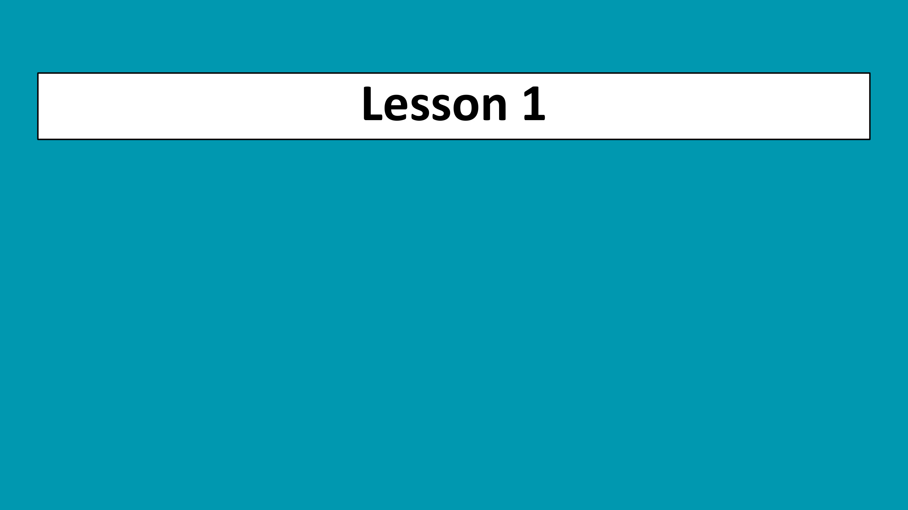
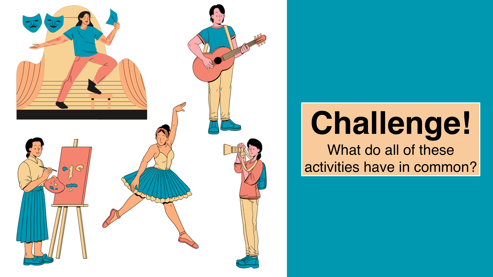
연극·기타 연주·그림 그리기·발레·사진 찍기가 그려져 있는데, 모두 무언가를 표현하고 전달하는 예술(the arts)이자 창작 활동(creative activity)이라는 공통점이 있다. have in common은 '공통으로 가지다'라는 뜻이다.
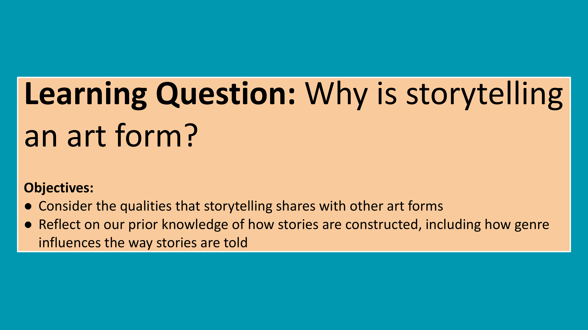
art form(예술 형식)은 그림·음악·춤처럼 사람이 뜻과 감정을 담아 표현하는 갈래를 뜻하고, genre(장르)는 공포·모험·로맨스처럼 이야기의 종류를 가른다. 같은 사건도 장르가 달라지면 말하는 순서·분위기·결말이 달라진다.
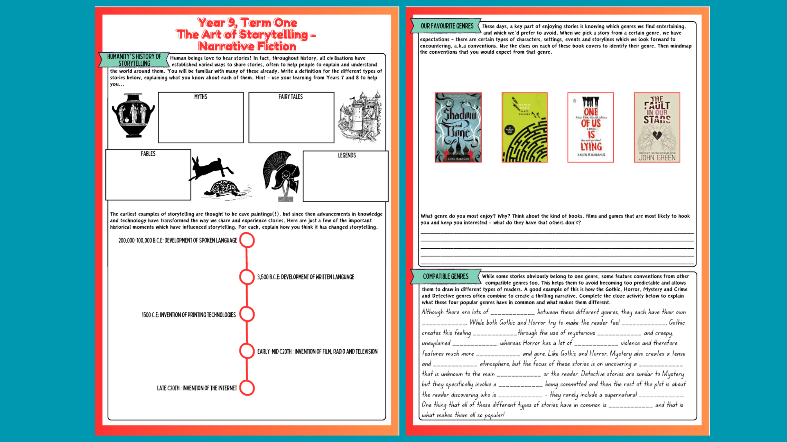
장르(genre)는 이야기의 종류를 가리키고, 관습(convention)은 그 장르에서 으레 나오는 인물·배경·사건의 정해진 틀을 말한다. 신화(myth)는 신과 세계의 기원을 설명하는 이야기, 우화(fable)는 동물을 등장시켜 교훈을 주는 짧은 이야기, 전설(legend)은 실제 인물이나 장소에 얽혀 전해지는 이야기다. 빈칸 채우기(cloze)는 문맥에 맞는 낱말을 넣어 문장을 완성하는 활동이다.
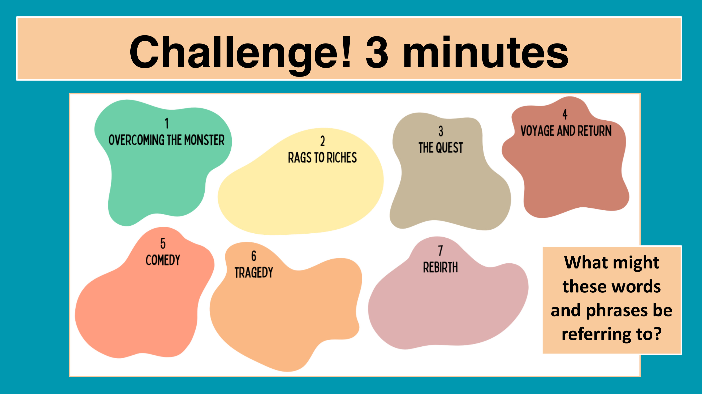
일곱 가지 기본 줄거리(the seven basic plots)로, 세상의 이야기가 크게 일곱 가지 틀로 나뉜다고 보는 분류다. rags to riches는 '누더기에서 부자로'라는 뜻의 관용구이고, voyage and return은 낯선 세계로 떠났다가 배운 것을 안고 돌아오는 구조, rebirth는 주인공이 잘못된 상태에서 새사람으로 다시 태어나는 구조를 뜻한다.
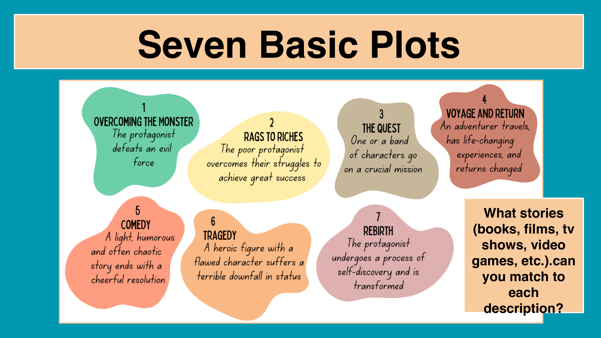
영국 작가 크리스토퍼 부커(Christopher Booker)가 제시한 분류로, 세상의 이야기를 일곱 가지 기본 줄거리 틀로 나눈 것이다. protagonist는 이야기의 중심인물인 주인공을 뜻하고, resolution은 갈등이 풀리는 결말 부분을 뜻한다.
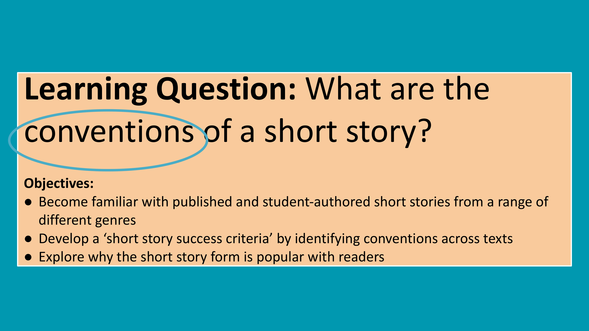
conventions는 어떤 갈래의 글에서 반복적으로 나타나는 약속된 특징(예: 등장인물 수가 적음, 하나의 사건에 집중, 갑작스러운 결말)을 뜻한다. success criteria는 좋은 글이 갖춰야 할 조건을 항목으로 정리한 점검표다.
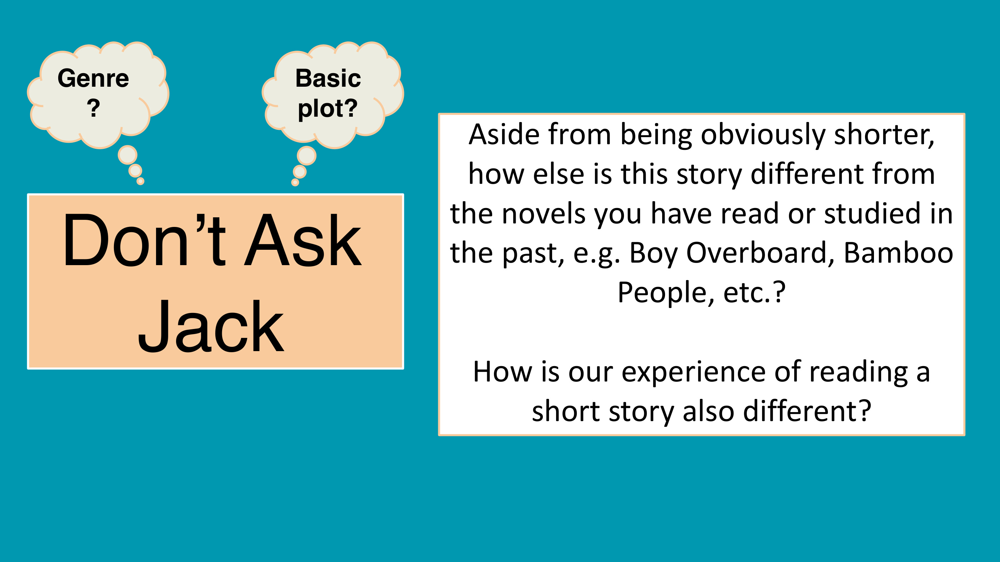
단편소설(short story)은 분량이 짧아 등장인물 수와 배경 설명이 적고, 하나의 사건·하나의 인상에 집중하며 결말이 열린 채 끝나는 일이 많다. 장편소설(novel)처럼 인물이 오래 성장하는 과정을 따라가기보다, 짧은 순간의 긴장과 분위기를 느끼는 읽기가 된다.
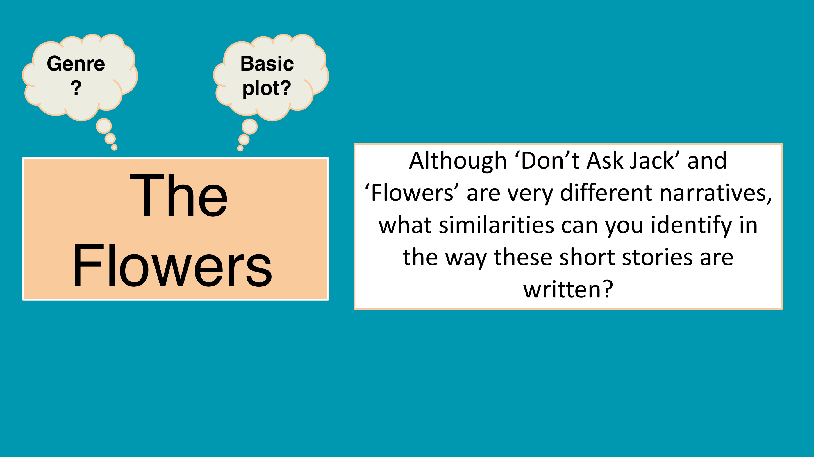
narrative는 이야기를 풀어가는 방식 전체를 가리키는 말이고, plot은 그 안에서 사건이 이어지는 뼈대를 뜻한다. 서로 다른 두 작품을 비교할 때는 소재보다 서술 시점·분위기·결말 처리 같은 '쓰인 방식'에서 공통점을 찾는 것이 핵심이다.
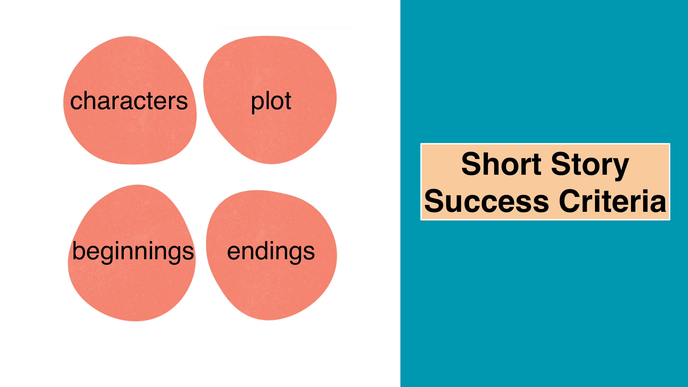
성공 기준(success criteria)은 글을 잘 썼는지 판단하는 채점 항목이다. 단편소설은 인물·줄거리·도입부·결말 네 가지로 평가한다.
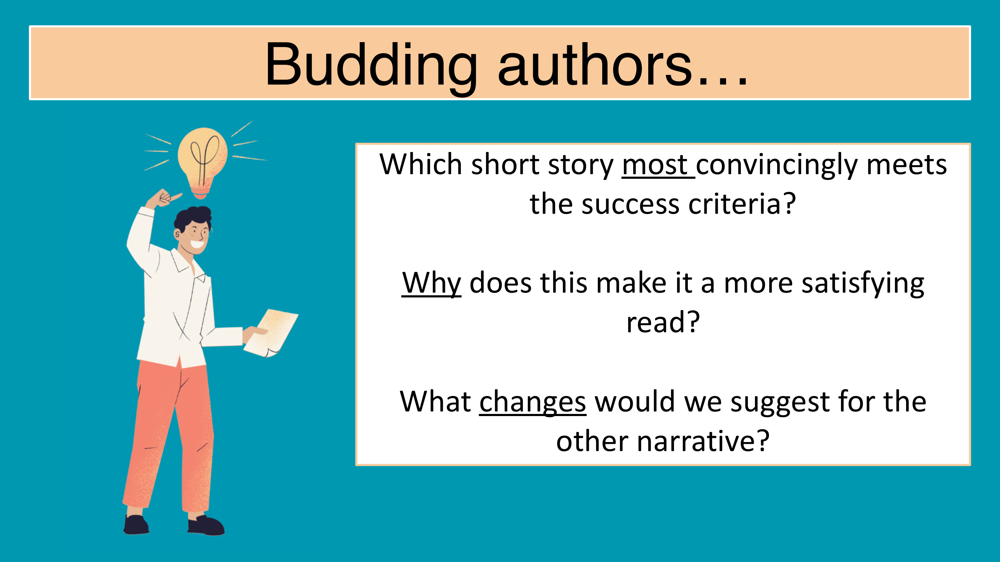
success criteria는 글이 갖춰야 할 조건을 미리 정해 둔 평가 항목이고, narrative는 사건이 이어지는 이야기 그 자체를 가리키는 말이다. 이 슬라이드는 친구의 글을 서로 평가하며 근거를 대고(why) 고칠 점(changes)을 제안하는 활동이다.
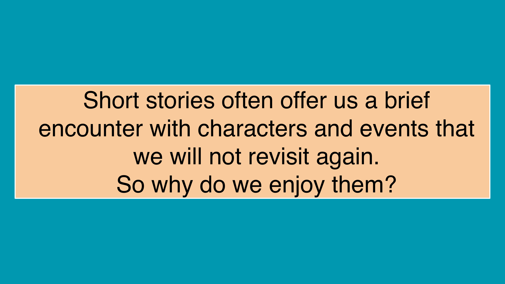
a brief encounter는 '짧은 만남', revisit은 '다시 찾아가다'라는 뜻이다. 장편 소설과 달리 단편은 인물과 사건을 오래 따라가지 않고 한 번만 보여 주는데, 그 짧음 자체가 주는 재미를 묻는 질문이다.
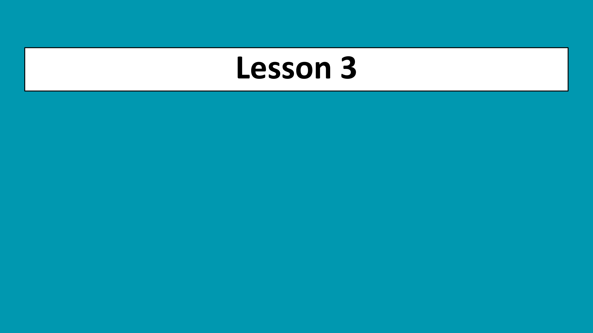
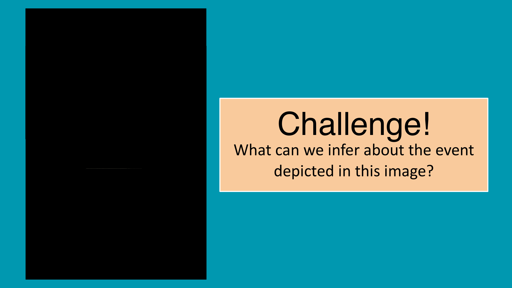
추론(infer)이란 그림이나 글에 직접 쓰여 있지 않은 것을 단서와 배경지식으로 미루어 알아내는 것이다. 이미지를 볼 때는 인물의 표정·자세, 배경, 소품 같은 세부 단서(details)를 근거로 삼아 어떤 일이 벌어지고 있는지 설명해야 한다.
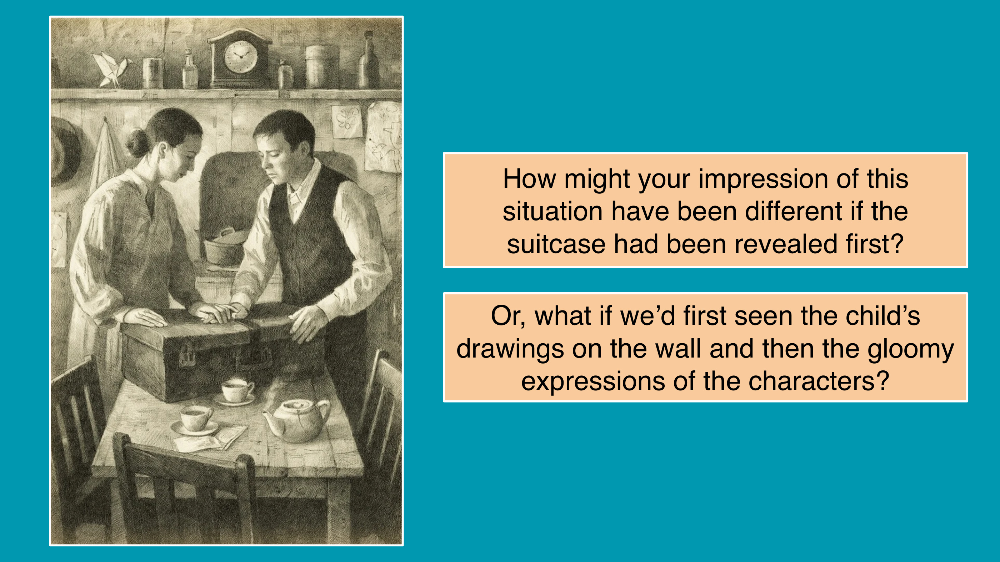
이야기에서 정보를 보여 주는 순서(order of reveal)가 독자의 해석을 바꾼다는 점을 묻는 물음이다. 같은 장면이라도 가방을 먼저 보면 '떠남·이별'로, 아이 그림을 먼저 보면 '아이를 잃음'으로 읽히는 식으로 인상이 달라진다.
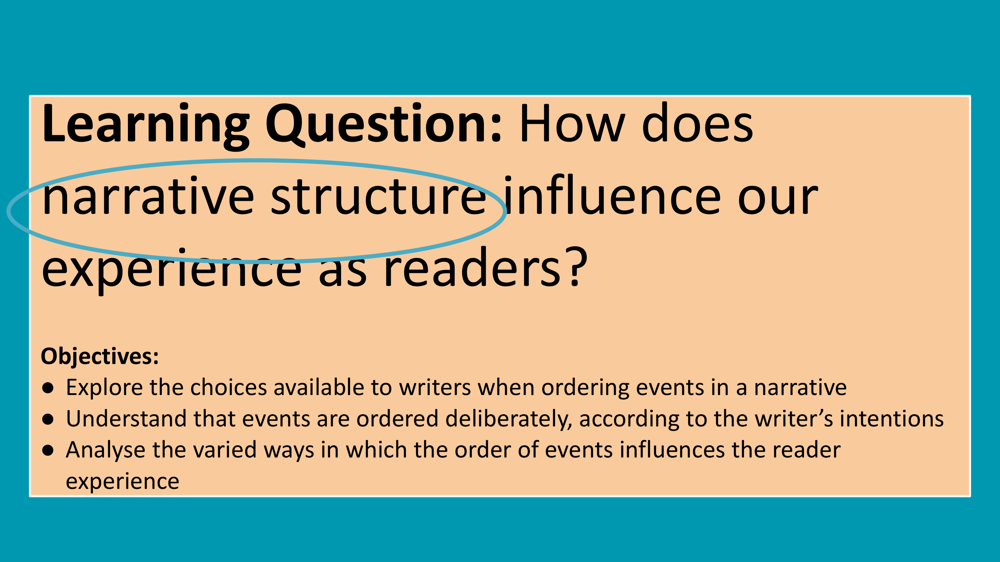
서사 구조(narrative structure)는 이야기의 사건을 어떤 순서로 늘어놓느냐를 말한다. 시간 순서대로 가는 방식(chronological)뿐 아니라, 과거로 돌아가는 회상(flashback), 앞일을 미리 암시하는 복선(foreshadowing), 사건 한가운데서 시작하는 방식(in medias res) 등이 있고, 이 선택에 따라 독자가 느끼는 긴장감과 몰입이 달라진다.
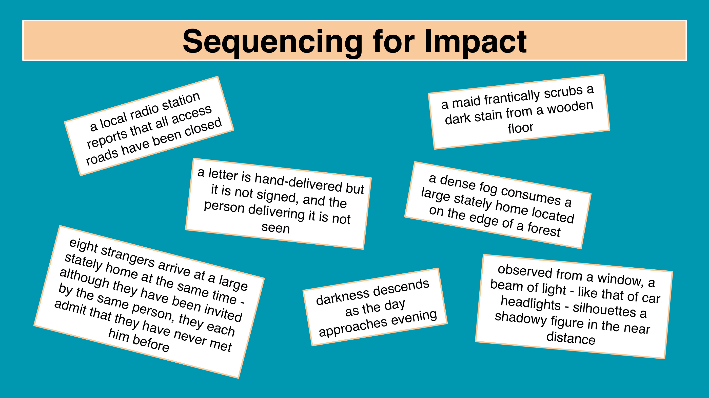
배열(sequencing)은 같은 사건들을 어떤 순서로 놓느냐에 따라 긴장감과 충격이 달라진다는 이야기 기법이다. 여기 흩어진 일곱 개의 사건 카드를 학생이 직접 순서대로 늘어놓으며 서스펜스(suspense)를 만드는 연습을 하는 활동이다.
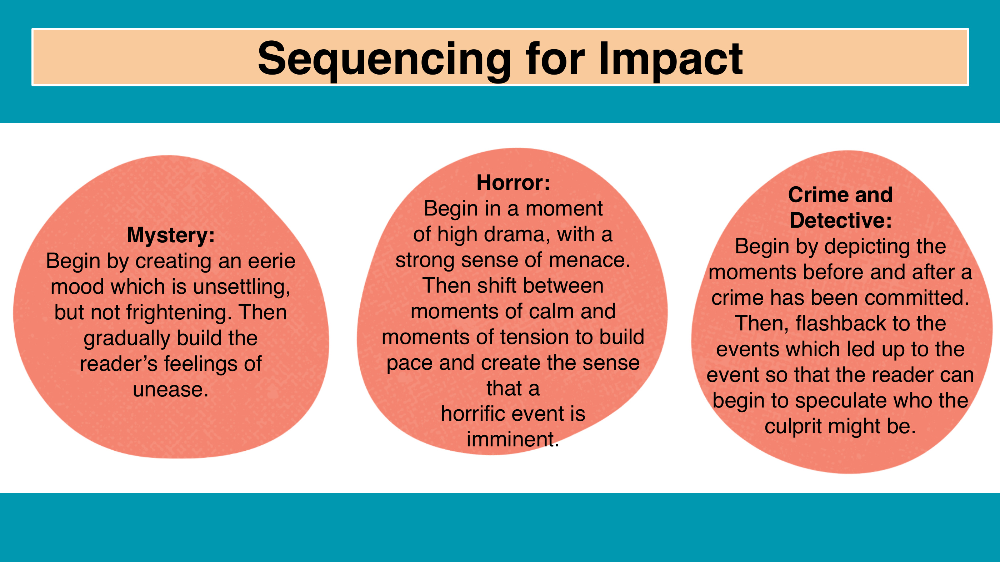
세 장르 모두 '사건이 일어난 순서'가 아니라 '독자가 가장 크게 반응할 순서'로 배열한다는 점이 핵심이다. eerie는 으스스한, menace는 곧 해를 입힐 것 같은 위협, imminent는 임박한, culprit은 죄를 저지른 범인을 뜻한다.
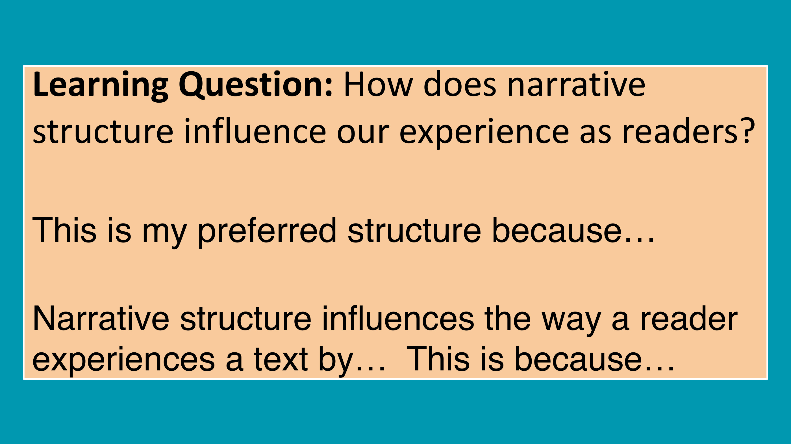
서사 구조(narrative structure)는 이야기를 어떤 순서·틀로 배열하느냐를 뜻한다. 예를 들어 시간 순서대로 가는 직선 구조(linear), 과거로 돌아가는 회상(flashback), 결말부터 보여주는 역순 구조 등이 있고, 배열 방식에 따라 독자가 느끼는 긴장감(suspense)과 정보량이 달라진다. 아래 두 문장은 답을 쓸 때 쓰는 문장 시작 틀(sentence starter)이므로, 빈칸 뒤를 자기 근거로 채워 영어로 답하면 된다.
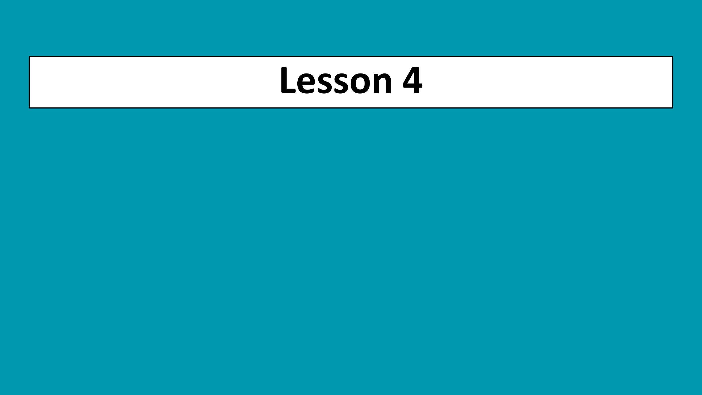
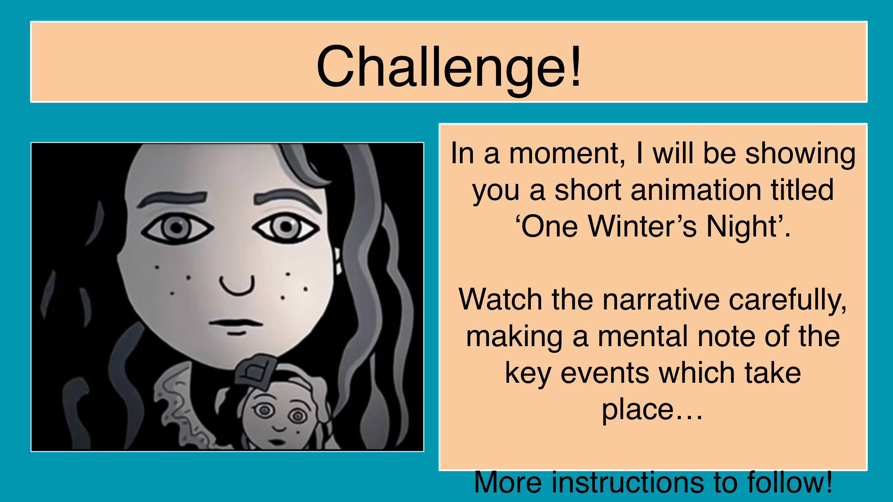
서사(narrative)는 사건이 시간 순서로 이어지는 이야기의 흐름을 뜻하고, 핵심 사건(key events)은 그 흐름을 이루는 중요한 장면들을 가리킨다. 이야기의 기술 수업에서는 대사 없는 애니메이션을 보고 사건 순서를 정리해 보는 활동이 자주 쓰인다.
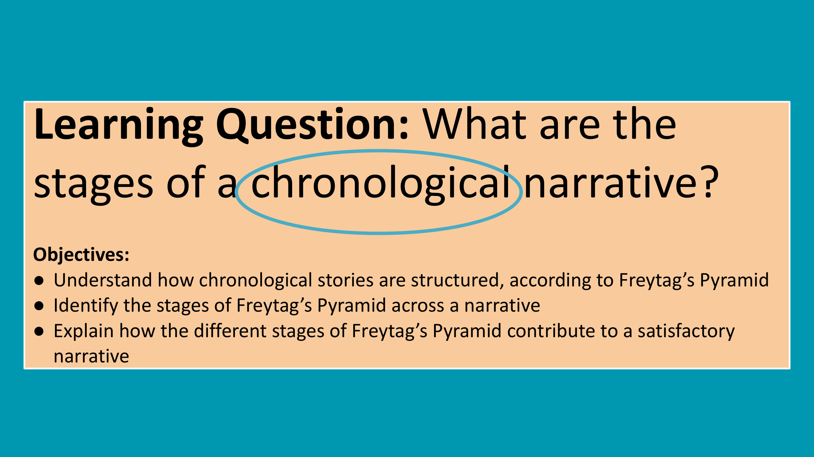
시간 순서 서사(chronological narrative)는 사건을 일어난 시간 순서대로 늘어놓는 이야기 방식이다. 프라이타크의 피라미드(Freytag's Pyramid)는 이야기를 발단(exposition)·상승(rising action)·절정(climax)·하강(falling action)·결말(resolution/denouement) 다섯 단계로 나눈 구조 모형이다.
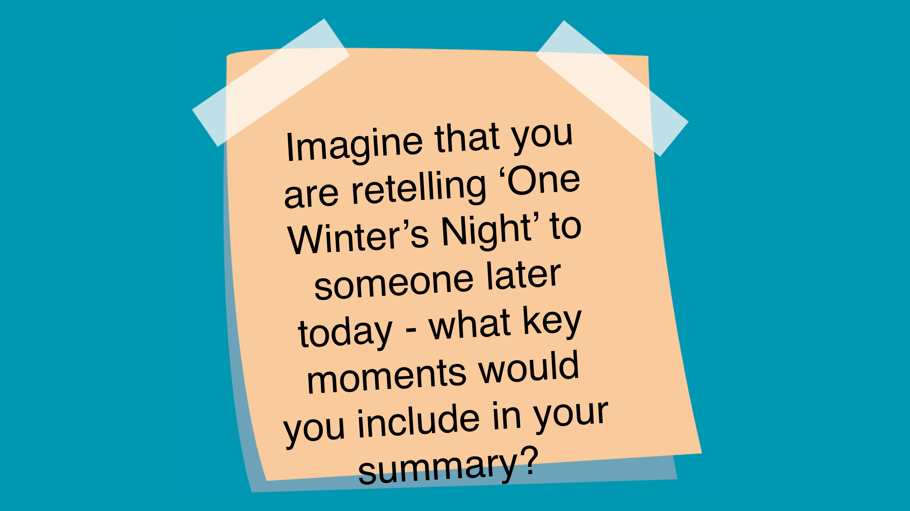
다시 말하기(retelling)는 이야기를 처음부터 끝까지 그대로 옮기는 것이 아니라, 줄거리를 이해하는 데 꼭 필요한 사건만 골라 짧게 전하는 것이다. 핵심 장면(key moment)이란 빼면 이야기가 말이 안 되는 사건을 뜻하며, 이런 사건만 추려 정리한 것이 요약(summary)이다.
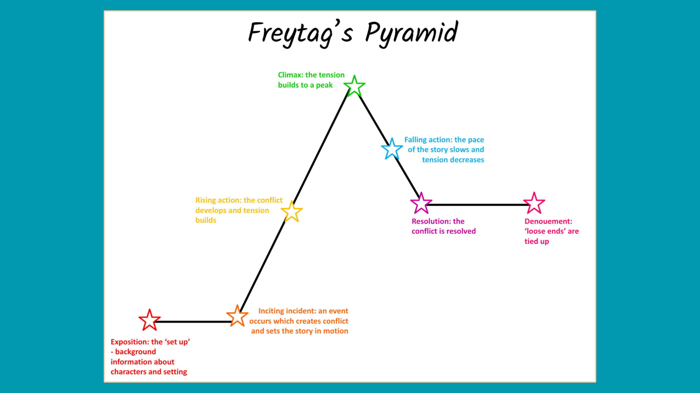
프라이타크의 피라미드는 이야기 구조를 다섯~여섯 단계로 나눈 그림이다. 왼쪽 아래 평평한 부분이 설명(exposition), 오르막이 상승 행동, 꼭대기가 절정, 내리막이 하강 행동, 오른쪽 평평한 부분이 해결과 대단원이다. loose ends는 아직 매듭짓지 않은 이야기 가닥을 뜻한다.
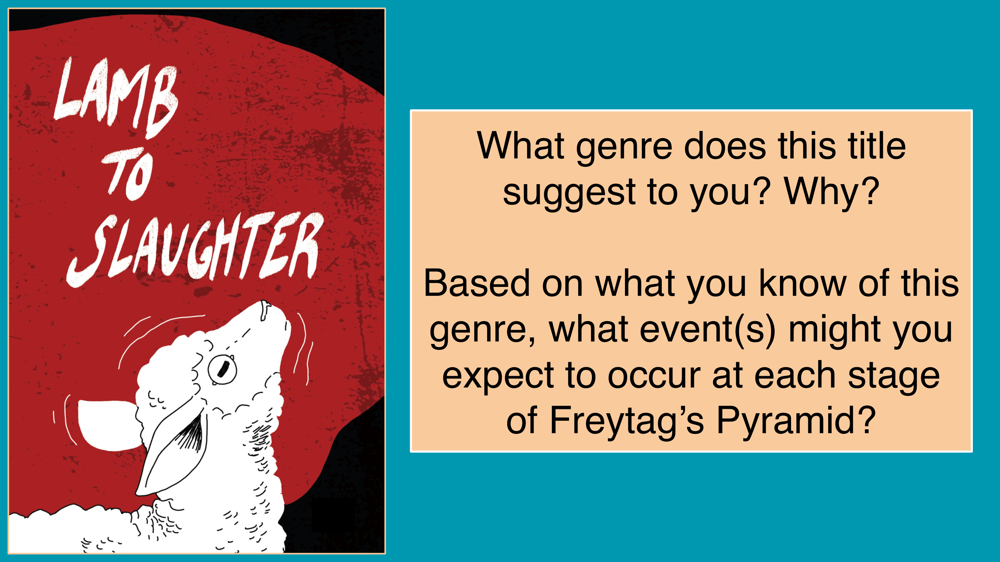
'Lamb to the Slaughter'는 로알드 달(Roald Dahl)의 단편으로, 제목은 '순순히 죽음으로 끌려가는 희생양'을 뜻하는 관용구다. 프라이타크의 피라미드는 이야기를 발단(exposition)·상승(rising action)·절정(climax)·하강(falling action)·결말(resolution/denouement) 다섯 단계로 나눈 구조 모형이다.
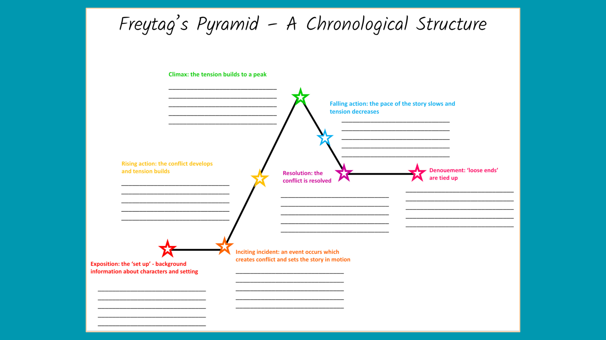
프라이타크의 피라미드는 이야기를 시간 순서대로 발단(exposition) → 발단 사건(inciting incident) → 상승 행동(rising action) → 절정(climax) → 하강 행동(falling action) → 해결(resolution) → 결말(denouement) 일곱 단계로 나눈 구조다. 그림의 별은 왼쪽 아래에서 시작해 꼭대기(절정)를 찍고 오른쪽 아래로 내려오는 순서이며, 각 단계 아래 빈 줄은 자기 이야기의 해당 단계를 적어 넣는 칸이다.
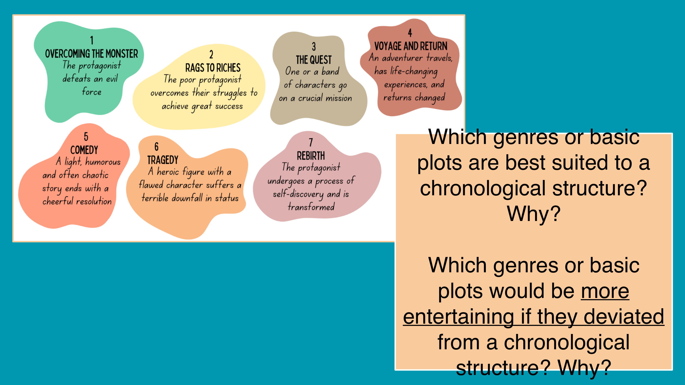
크리스토퍼 부커가 정리한 일곱 가지 기본 플롯(seven basic plots)으로, 세상 이야기 대부분이 이 일곱 틀 중 하나에 들어간다는 주장이다. 시간 순서 구조(chronological structure)는 사건을 일어난 순서대로 늘어놓는 방식이고, 여기서 벗어나는 대표적 장치가 회상(flashback)과 복선 뛰어넘기(flash-forward), 결말부터 시작하기(in medias res)다.
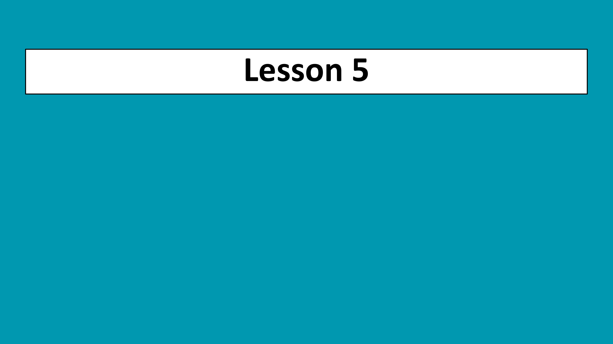
이 장은 다섯 번째 수업의 시작을 알리는 표지 화면이다.
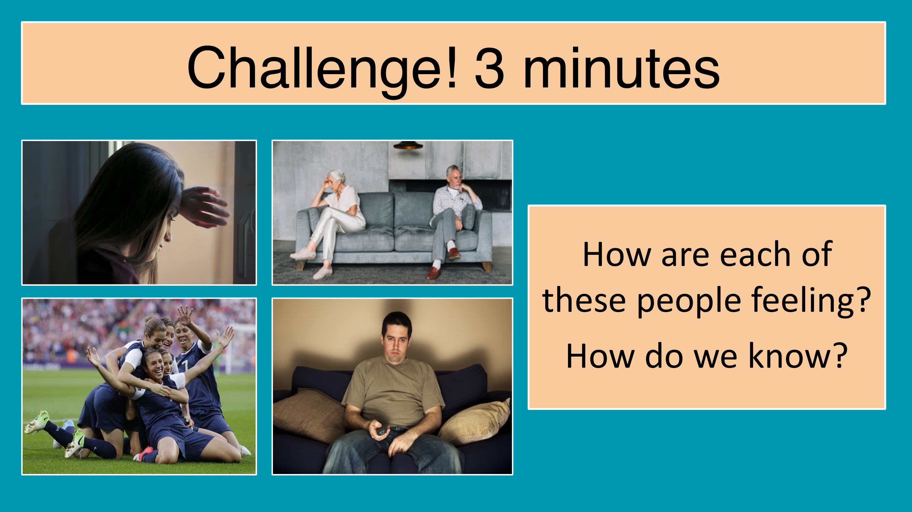
사진 속 인물의 표정·자세·몸짓 같은 몸짓언어(body language)를 근거로 감정을 짐작하는 활동이다. 이야기를 쓸 때 '슬프다'라고 말하는 대신 행동으로 감정을 드러내는 보여주기, 말하지 않기(show, don't tell) 기법과 이어진다.
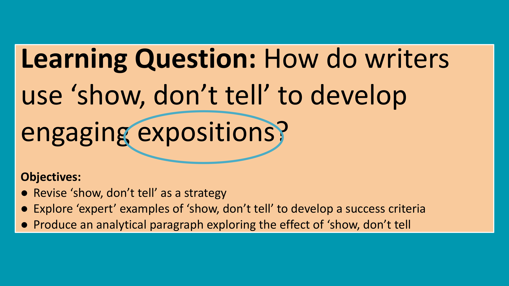
exposition(발단)은 이야기 첫머리에서 인물·배경·상황을 알려 주는 부분이다. show, don't tell은 '그는 화가 났다'처럼 직접 말해 버리는 대신 행동·감각 묘사로 독자가 스스로 느끼게 하는 서술 기법이다.
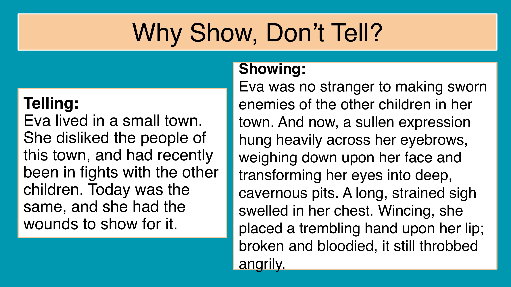
'말하기(telling)'는 인물의 상태를 작가가 요약해 알려주는 방식이고, '보여주기(showing)'는 표정·행동·감각 묘사로 독자가 스스로 느끼게 하는 방식이다. 두 글은 같은 내용이지만, 보여주기 쪽은 disliked·fights 같은 설명 대신 sullen expression, cavernous pits, trembling hand 같은 구체적 묘사를 써서 감정을 전달한다.
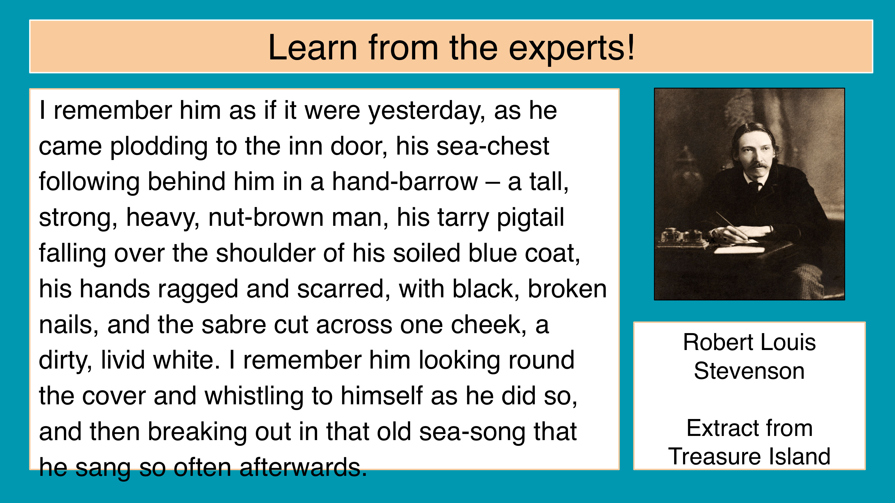
인물 묘사(character description)의 본보기로, 겉모습의 구체적인 세부(옷·손·흉터·머리 모양)를 쌓아 인물의 과거와 성격까지 짐작하게 만드는 기법이다. plodding(터덜터덜 걷다), tarry(타르가 묻은·끈적한), livid(검푸른·핏기 없는)처럼 감각을 자극하는 낱말 선택이 핵심이다.
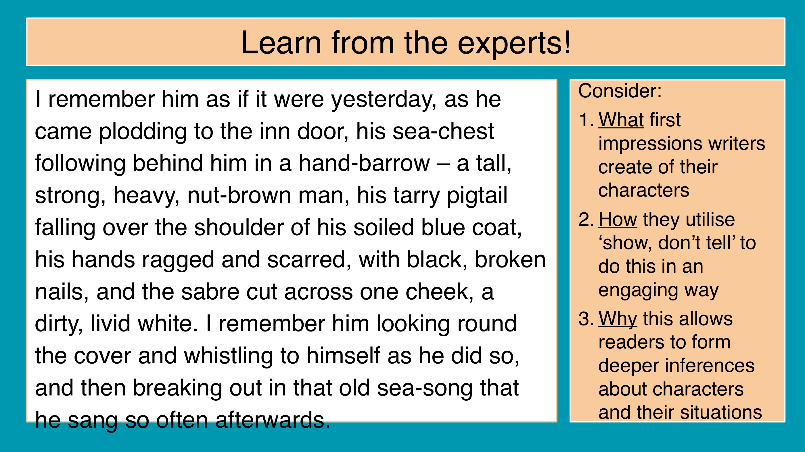
이 글은 로버트 루이스 스티븐슨의 『보물섬』 첫머리로, 인물을 '거칠다'고 직접 설명하지 않고 흉터·부러진 손톱·더러운 외투 같은 구체적 모습만 보여 주는 show, don't tell의 본보기다. inference(추론)는 글에 직접 적히지 않은 것을 단서로 미루어 짐작하는 읽기 방식을 뜻한다.
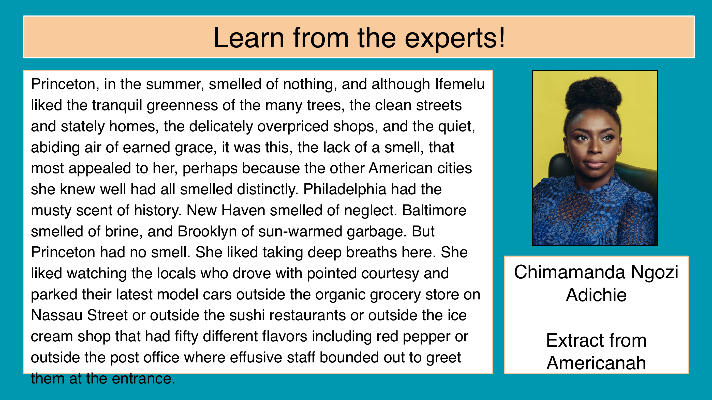
이 글은 감각 묘사(sensory description), 그중에서도 후각(smell)만으로 장소의 성격을 그리는 기법을 보여 준다. 각 도시에 냄새를 하나씩 붙여 대조한 뒤 '냄새 없음'을 프린스턴의 특징으로 삼는 방식은 병렬 구조(parallel structure)와 대조(contrast)를 함께 쓴 예다. tranquil(고요한), stately(위풍당당한), abiding(지속되는), effusive(넘치도록 다정한) 같은 낱말이 배경의 분위기(tone)를 만든다.
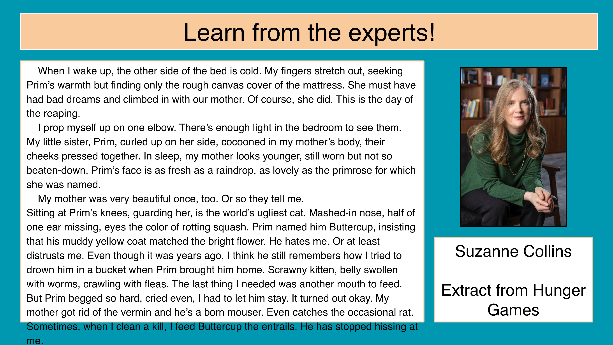
작가가 인물을 소개할 때 설명 대신 '감각과 행동'으로 보여 주는(show, don't tell) 기법을 보여 주는 예문이다. 차가운 침대 반대편, 거친 캔버스 천, 썩은 호박 빛 눈처럼 만지고 보는 감각적 세부(sensory detail)로 가난한 처지와 인물의 성격을 드러내고, '빗방울처럼 싱그럽다'는 직유(simile)로 프림의 순수함을 대비시킨다. reaping(추첨·수확)은 작품 속에서 아이들을 경기에 뽑아 가는 행사를 뜻하며, primrose(앵초)는 동생 이름 Prim의 어원이라 이름 자체가 인물 묘사가 된다.
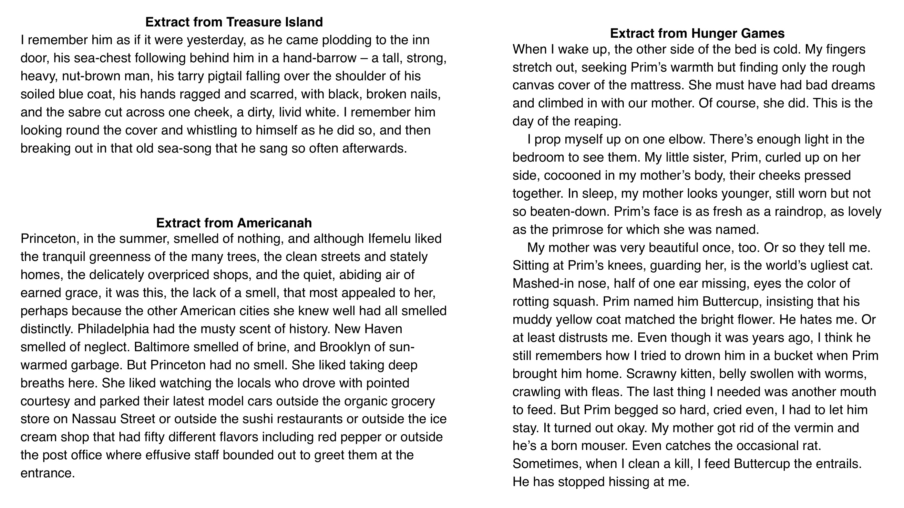
세 발췌는 모두 이야기의 첫머리에서 쓰이는 서술 기법을 보여준다. 『보물섬』은 어른이 된 화자가 과거를 돌아보는 1인칭 회상(first-person retrospective)으로 인물의 겉모습을 감각적 묘사(sensory description)로 쌓아 올리고, 『아메리카나』는 후각 이미지(olfactory imagery)로 도시들을 대비시켜 인물의 내면과 이방인의 시선을 드러내며, 『헝거 게임』은 1인칭 현재시제(first-person present tense)로 사건이 지금 벌어지는 듯한 긴박감을 준다. '추첨일(the reaping)'처럼 설명 없이 던져진 낯선 낱말은 독자의 궁금증을 끌어내는 장치다.
'Show, Don't Tell'은 글쓰기 기법으로, 인물의 감정이나 상황을 직접 설명(tell)하지 않고 행동·표정·감각 묘사로 독자가 스스로 느끼게 하는(show) 방식이다. '성공 기준(success criteria)'은 과제를 잘 해냈다고 볼 수 있는 조건 목록을 뜻하며, 옆의 빈 클립보드는 그 기준을 채워 넣을 자리다.
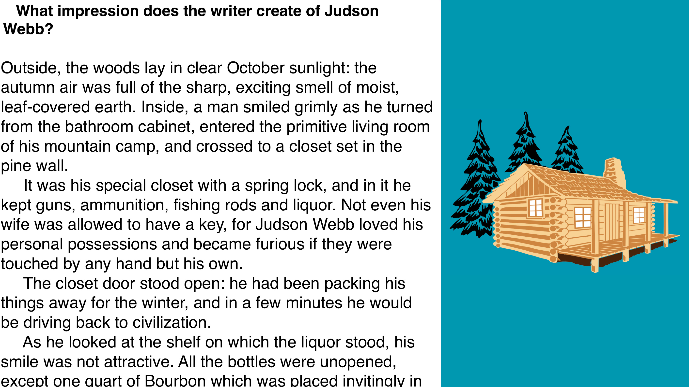
'grimly'는 즐거워서 웃는 게 아니라 냉혹하고 음산하게 웃는 것을 뜻한다. 작가가 인물을 직접 '나쁜 사람'이라 말하지 않고, 자물쇠 달린 벽장·아내에게도 안 주는 열쇠·보기 싫은 미소 같은 세부 묘사로 성격을 드러내는 것을 '보여주기'(showing)라 한다. 'invitingly'(꾀듯이)는 누군가 그 술을 마시게 하려는 함정을 암시한다.
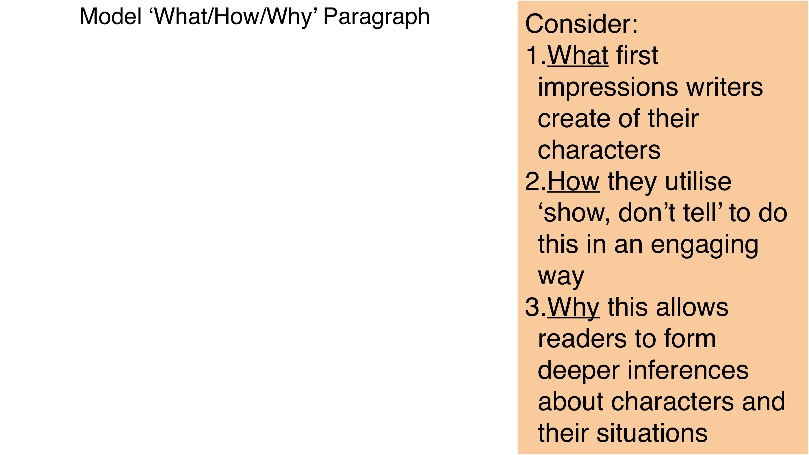
'말하지 말고 보여줘라(show, don't tell)'는 인물의 성격을 직접 설명하지 않고 행동·말투·묘사로 드러내는 서술 기법이다. 추론(inference)은 글에 직접 적혀 있지 않은 것을 단서로 읽어 내는 것을 뜻한다.
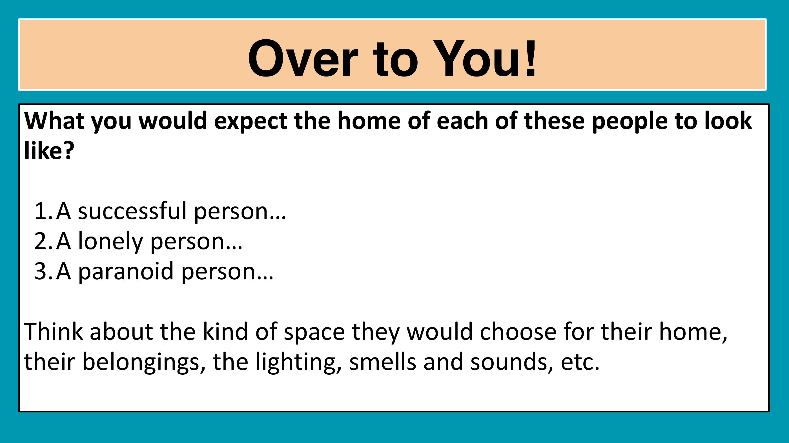
paranoid는 남이 자기를 해치거나 감시한다고 지나치게 의심하는 상태를 뜻한다. 이 활동은 인물의 성격을 직접 설명하지 않고 배경·사물 묘사로 드러내는 '말하지 말고 보여주기(show, don't tell)' 기법을 연습하는 것이다.
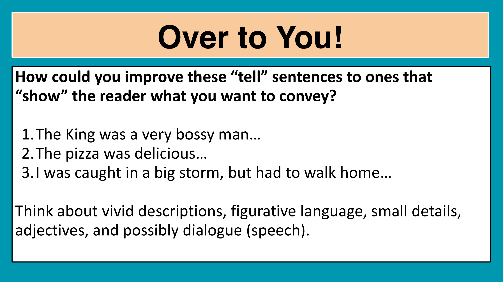
'보여주기, 말하지 말고(show, don't tell)'는 감정이나 성질을 단어로 단정해 말하는 대신 행동·감각·장면으로 드러내는 글쓰기 기법이다. 예를 들어 '그 왕은 위세를 부렸다'라고 말하는 대신, 왕이 손가락을 튕겨 신하들을 불러세우고 명령을 쏟아내는 장면을 쓰는 식이다. 비유적 언어(figurative language)는 직유(simile)·은유(metaphor)처럼 빗대어 표현하는 말을 뜻한다.
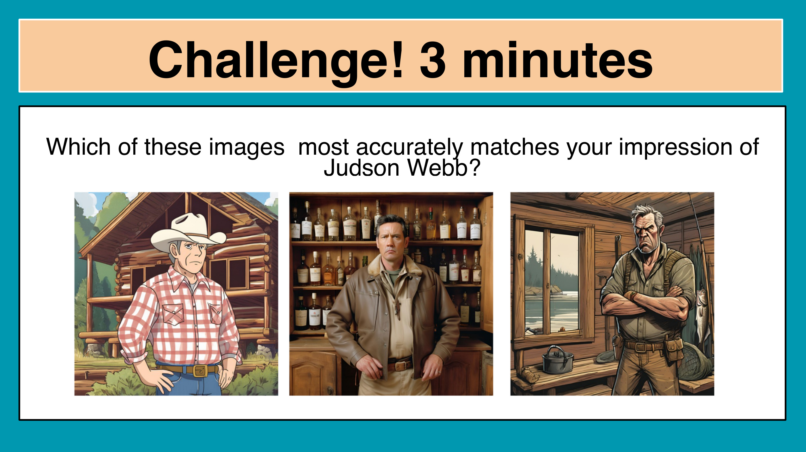
impression은 어떤 인물에 대해 글을 읽고 머릿속에 그려진 '인상·느낌'을 뜻한다. 작가가 직접 설명하지 않고 말투·행동·배경 묘사로 인물을 그려내는 것을 간접적 인물 제시(indirect characterization)라 하며, 이 활동은 본문 단서에서 얻은 인상을 시각 이미지와 견주어 보는 연습이다.
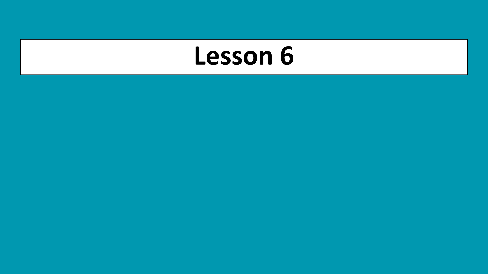
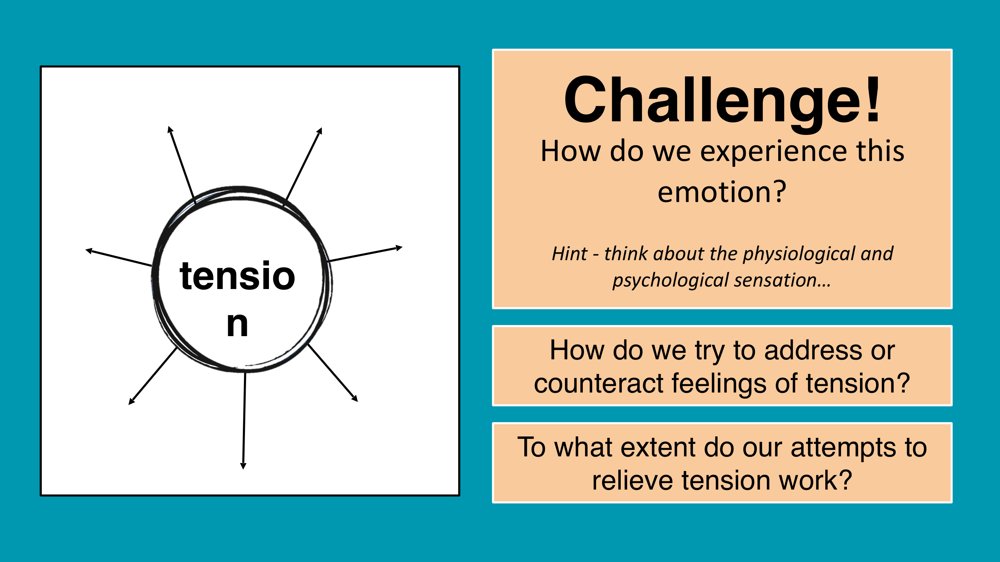
tension(긴장)은 이야기에서 독자가 다음에 무슨 일이 일어날지 몰라 조마조마해지는 상태를 말한다. physiological(생리적)은 심장이 빨리 뛰고 손에 땀이 나는 등 몸에 나타나는 반응이고, psychological(심리적)은 불안·초조 같은 마음의 반응이다.
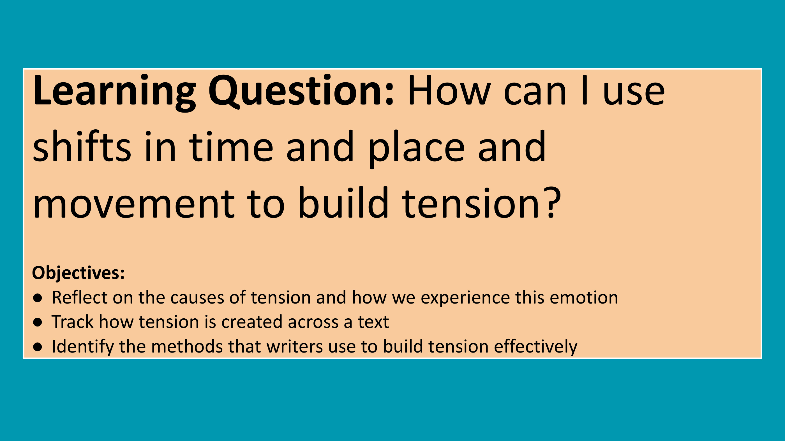
tension은 독자가 다음에 무슨 일이 벌어질지 조마조마해하는 긴장감을 뜻한다. shifts in time and place(시간·장소의 전환)는 장면을 갑자기 다른 때나 다른 곳으로 옮겨 긴장을 높이는 방법이고, movement(움직임)는 인물의 행동 속도를 조절해 같은 효과를 내는 방법이다.
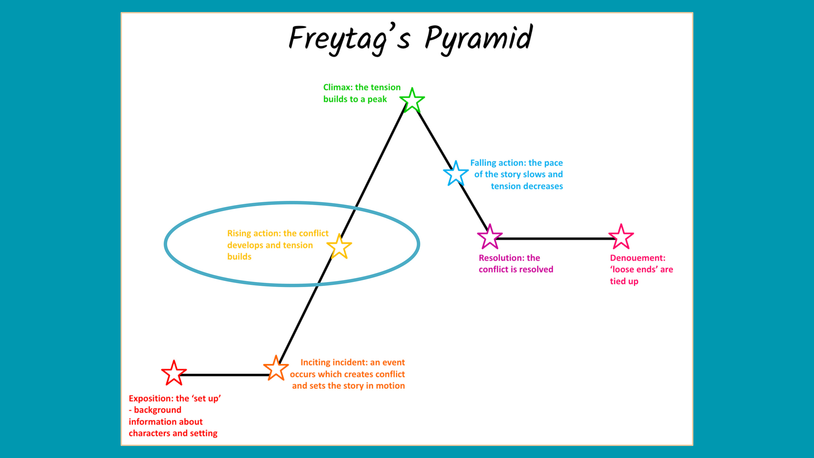
독일 소설가 구스타프 프라이타크가 정리한 이야기 구조 모형이다. 이야기를 긴장의 높낮이로 그려 발단(exposition) → 발단 사건(inciting incident) → 상승 행동(rising action) → 절정(climax) → 하강 행동(falling action) → 해결(resolution) → 대단원(denouement)의 일곱 단계로 나눈다. 해결(resolution)은 갈등 자체가 끝나는 지점이고, 대단원(denouement)은 그 뒤에 남은 이야깃거리를 정리하는 마무리 부분이라는 점이 다르다.
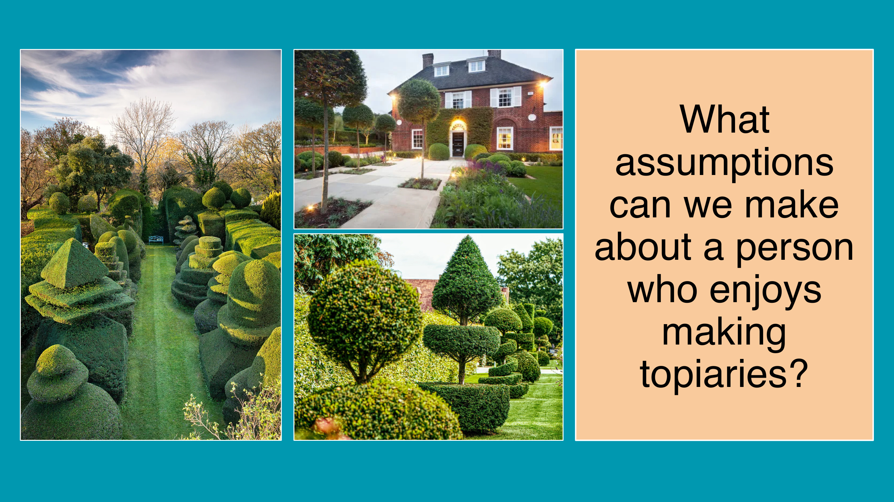
토피어리(topiary)는 나무나 관목을 원뿔·공·나선 같은 모양으로 다듬어 기르는 정원 기술이다. 어섬션(assumption)은 근거를 다 알지 못한 채 사실이라고 여기는 가정·짐작을 뜻하며, 인물을 묘사할 때 취미·습관 같은 세부로 독자가 성격을 짐작하게 만드는 기법과 연결된다.
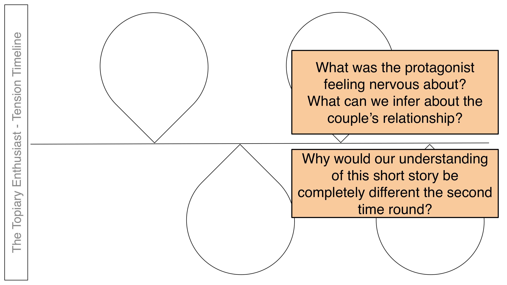
긴장 흐름표(tension timeline)는 이야기가 진행되면서 긴장이 올라가고 내려가는 것을 가로선 위(고조)·아래(이완) 곡선으로 그린 그림이다. 추론(infer)은 글에 직접 적혀 있지 않은 것을 단서로 미루어 짐작하는 것을 말한다.
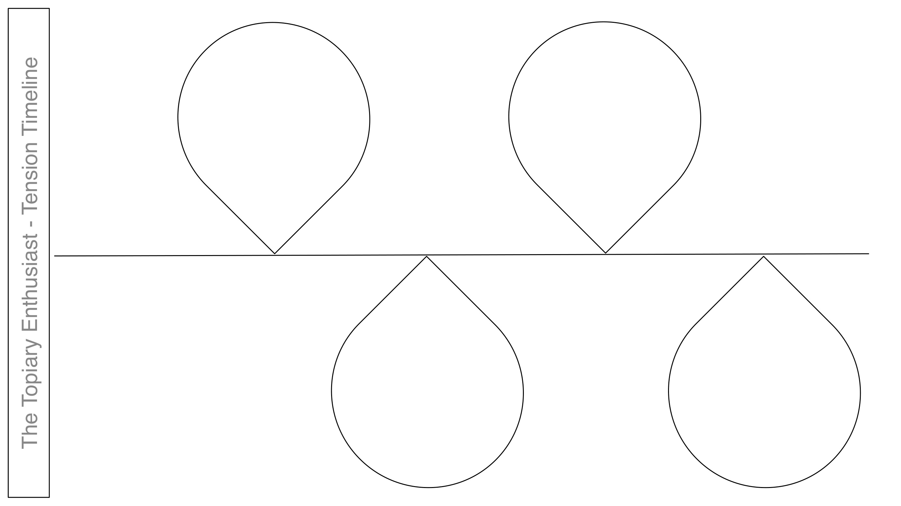
긴장 흐름표(tension timeline)는 이야기가 흘러가는 동안 긴장이 오르내리는 모양을 가로선 위아래의 물방울 모양으로 표시하는 도구다. 선 위쪽은 긴장이 높아지는 장면, 아래쪽은 긴장이 풀리는 장면을 뜻한다. 토피어리(topiary)는 나무를 동물이나 도형 모양으로 다듬은 정원 장식을 말한다.
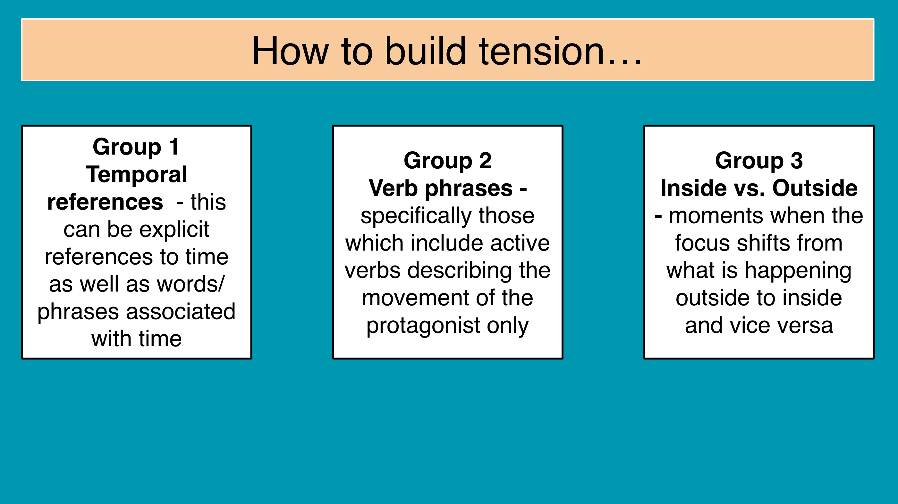
긴장감(tension)은 독자가 다음을 궁금해하며 조마조마하게 만드는 힘이다. 세 가지 장치는 각각 시간을 재촉하고(시간 표현), 인물의 행동에 시선을 붙들고(주인공만의 능동 동사), 시점을 안팎으로 옮겨 불안을 키운다. vice versa는 '반대로 또한 그러하다'는 뜻의 라틴어 표현이다.
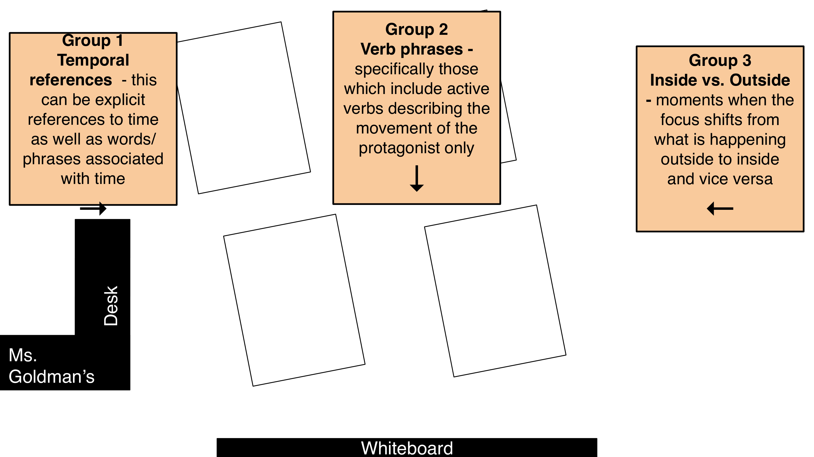
교실 자리 배치도로, 세 모둠이 이야기를 분석할 항목을 나눠 맡는다. temporal reference는 'that night', 'after a while'처럼 시간을 가리키는 말이고, active verb는 주인공이 직접 하는 동작을 나타내는 동사다. vice versa는 '반대의 경우도 마찬가지'라는 뜻이다.
protagonist는 이야기의 주인공을 뜻하고, temporal references는 '그날 밤', '한 시간 뒤'처럼 시간을 가리키는 표현이다. 세 가지 장치(시간 표현·동사구·안팎의 초점 이동)가 모두 장면을 빠르게 옮겨 놓아 독자가 다음을 예측하지 못하게 만들고, 그것이 긴장감으로 이어진다.
'무엇/어떻게/왜(What/How/Why)'는 문학 분석 문단을 쓰는 틀이다. 무엇(What)=작가가 전하는 내용, 어떻게(How)=그것을 전달하는 기법(methods), 왜(Why)=그 기법이 독자에게 주는 효과를 순서대로 쓴다. 주인공(protagonist)은 이야기의 중심 인물, 긴장감(tension)은 독자가 느끼는 조마조마한 불안감을 뜻한다.
evoke는 감정·기억·이미지를 마음속에 불러일으킨다는 뜻이다. 이야기의 기술 수업에서는 음악이 분위기(mood)를 만들 듯, 글도 낱말 선택으로 독자의 감정을 불러일으킨다는 점을 연습한다.
pace는 이야기가 흘러가는 속도감을 뜻하며, 짧은 문장·짧은 단락·강한 동사 등으로 빠르게 만들 수 있다. climatic event는 이야기가 가장 긴장이 높아지는 절정 장면을 가리킨다.
프라이타크의 피라미드는 이야기 구조를 다섯~일곱 단계로 나눈 도식이다. 왼쪽 아래 도입(exposition)에서 시작해 발단 사건(inciting incident)으로 올라가기 시작하고, 상승 행동(rising action)을 거쳐 꼭대기의 절정(climax)에 이른 뒤, 하강 행동(falling action)으로 내려와 해결(resolution)과 대단원(denouement)으로 끝난다. denouement는 프랑스어에서 온 말로 '매듭을 푼다'는 뜻이며, 절정 이후 남은 궁금증을 정리하는 부분이다.
교실 자리 배치도로, 네 개의 모둠 책상이 각각 하나의 장르(genre)를 맡는다는 뜻이다. 디스토피아(dystopia)는 겉으로는 질서 잡힌 듯하지만 실제로는 억압적인 미래 사회를 그린 장르이고, 스릴러/미스터리는 긴장과 수수께끼 풀이가 중심이 되는 장르다.
위험 상황에서 사람의 사고는 좁아지고 감각은 예민해진다는 점을 짧은 문장·감각 묘사로 옮기는 것이 이 수업의 핵심이다. convey는 '(생각·느낌을) 전달하다', surroundings는 '주변 환경', react and respond는 '즉각 반응하다/대응하다'는 뜻이다.
단문(simple sentence)은 주어+동사가 하나뿐인 짧은 문장이고, 불완전문(minor sentence)은 "또 메아리."처럼 동사 없이 조각으로 쓴 문장이다. 이런 짧은 문장과 같은 말의 반복(repetition), 소리·색 같은 감각 묘사(sensory description)가 겹치면 읽는 속도가 빨라져 긴장과 공포가 커진다. 이 대목은 레이 브래드버리(Ray Bradbury)의 작품에 나오는 장면이다.
프라이타크의 피라미드는 이야기의 구조를 다섯 단계로 나눈 것이다 — 발단(exposition), 상승 전개(rising action), 절정(climax), 하강 전개(falling action), 결말(resolution/denouement). 그림들은 각 단계의 비유다: 매듭(knot)은 얽힌 갈등, 성냥불(match)은 사건의 촉발, 미로(maze)는 복잡해지는 전개, 외줄타기(tightrope)는 긴장이 최고조에 이른 절정, 결승선(finish line)은 이야기의 마무리, 머리를 감싸 쥔 모습은 갈등(conflict)과 긴장(tension)을 나타낸다.
chronological narrative는 사건을 일어난 순서 그대로 늘어놓는 이야기 방식이다. in medias res는 이야기 한복판에서 시작하는 기법, flashback은 과거 장면으로 되돌아가는 기법, cliffhanger는 결정적인 순간에 끊어 궁금증을 남기는 기법이다. deviate는 '정해진 길에서 벗어나다'라는 뜻이다.
프라이타크의 피라미드는 이야기를 긴장의 오르내림으로 그린 7단계 구조다. 시간 순서를 벗어나는 대표적 기법으로는 과거로 돌아가는 회상(flashback), 앞일을 미리 암시하는 복선(foreshadowing), 이야기 중간부터 시작하는 인 메디아스 레스(in medias res)가 있다.
세 가지 모두 시간 순서를 흐트러뜨리는 서사 구조다. 인 메디아스 레스(in medias res)는 이야기를 사건 한복판에서 시작해 독자를 단번에 끌어들이고, 회상 장면(flashback)은 과거로 되돌아가 인물의 동기나 숨은 사정을 밝히며, 절벽 끝 결말(cliffhanger)은 궁금증을 남긴 채 끊어 다음을 읽게 만든다.
인 메디아스 레스(in medias res)는 '사건의 한복판에서'라는 뜻의 라틴어로, 이야기를 처음부터가 아니라 가장 긴박한 장면 도중에 시작하는 기법이다. 독자는 배경 설명 없이 위기 상황에 던져져 곧바로 긴장감을 느끼고, '어쩌다 이렇게 됐나'가 궁금해져 계속 읽게 된다. 이 대목에서 우주에서 추락해 바다에 착수하는 장면을 첫 장면으로 쓴 것이 바로 그 예다.
절벽 끝 결말(cliffhanger ending)은 결말을 맺지 않고 긴장된 순간에 끊어, 다음에 무슨 일이 벌어질지 독자가 상상하게 두는 마무리다. 판별하는 단서는 마지막 문장이 새로운 위협이나 인기척을 '방금 드러내며' 끝나는지다 — 상자 속에서 기다리는 잭, 코앞의 시체를 두고 키득거리는 메리 말로니, 도착하는 경찰차, 뒤에서 나는 헛기침이 모두 그런 예다. 반대로 마이옵이 꽃을 내려놓고 "여름은 끝났다"로 닫히는 문장은 사건이 정리되는 닫힌 결말(resolved ending)에 가깝다.
인 메디아스 레스(in medias res)는 라틴어로 '사건의 한가운데로'라는 뜻이며, 배경 설명 없이 이미 진행 중인 행동으로 이야기를 시작하는 도입 방식이다. 여기 제시된 여섯 개의 도입부 중 인물이 이미 움직이고 있는 것(발을 내딛거나 뛰어다니는 것)은 사건 한복판 도입이고, 날씨·방·물건을 먼저 묘사하는 것은 배경 묘사 도입(descriptive/setting opening)이다.
인 메디아스 레스(in medias res)는 '사건의 한가운데서'라는 뜻의 라틴어로, 이야기를 처음부터가 아니라 한창 벌어지는 장면에서 시작하는 기법이다. 독자를 단번에 끌어들이는 장점이 있지만, 배경 설명이 없어 혼란을 줄 수 있는 것이 함정(pitfall)이다.
'Lather and Nothing Else'는 콜롬비아 작가 에르난도 테예스(Hernando Téllez)의 단편으로, 이발사가 손님인 군 장교의 목에 면도칼을 대고 있는 장면을 다룬다. 이야기 중간 지점에서 시작하는 기법을 인 메디아스 레스(in medias res)라 하며, 작가가 정보를 일부러 늦게 흘리는 것을 서스펜스(suspense)라고 한다.
이 이야기의 화자는 이발사이면서 몰래 반대편(저항 세력)에 속해 있고, 손님으로 앉은 남자는 그 동료들을 잡아 죽인 군인이다. 독자는 알지만 등장인물은 모르는 사실 때문에 생기는 긴장을 극적 아이러니(dramatic irony)라 한다. lather는 비누를 물과 섞어 낸 거품, razor는 면도칼을 뜻한다.
in medias res는 라틴어로 '사건의 한가운데로'라는 뜻이며, 이야기를 처음부터가 아니라 사건이 한창 벌어지는 지점에서 시작하는 기법이다. 표를 채울 때는 왼쪽에 이 기법의 장점, 오른쪽에 단점을 적으면 된다.
in medias res는 라틴어로 '사건의 한가운데로'라는 뜻이며, 이야기를 처음부터가 아니라 한창 진행 중인 장면에서 시작하는 기법이다. withhold는 '(정보를) 주지 않고 감추다'라는 뜻으로, 감춘 정보가 독자의 궁금증을 만들어 hook(독자를 낚아채는 장치) 역할을 한다.
이 자료는 Short story anthology 단원의 맨 앞 0.0 문서로, 제목이 The Art of Storytelling(이야기를 만드는 기술)이다. 본문 글은 거의 없고 큰 그림 한 장과 이름 적는 칸(Name: ____)만 있는 표지 형태다.
이런 표지 장은 뒤에 이어질 여러 편의 단편소설과 활동지를 하나로 묶는 모음집(anthology)의 첫 페이지 역할을 한다. 즉 이 문서 자체를 외우는 것이 아니라, 앞으로 받을 자료들을 여기에 이어 붙여 한 권처럼 관리하라는 뜻이다.
받자마자 이름을 적어 두고, 단원이 끝날 때까지 이 묶음을 잃어버리지 않는 것이 이 장의 실제 용도다.
Storytelling은 이야기를 짜임새 있게 만들어 들려주거나 써 내는 일을 말한다. 이 단원에서는 인물·배경·줄거리 같은 이야기의 요소를 써서 이야기를 만드는 방법을 배운다.
Jack-in-the-box는 뚜껑을 열면 용수철에 달린 인형이 튀어나오는 장난감이다. 이 이야기에서는 잭이 '튀어나오지 않고 천천히 솟아오른다'고 써서 평범한 장난감을 섬뜩한 존재로 바꾸고, 마지막 문장 'He can wait forever'로 끝나지 않은 공포를 남긴다.
이 이야기에서 마이옵이 발견한 시체와 참나무에 걸린 올가미(noose)는 남자가 린치(lynching), 곧 재판 없이 집단에 의해 목매달려 죽임을 당했다는 뜻이다. 마지막 문장 '그리고 여름은 끝났다'는 계절이 아니라 마이옵의 어린 시절 순수함(innocence)이 끝났음을 상징한다(symbolism).
평소 정확히 같은 시간에 오던 남편이 반이나 남은 술을 한 번에 마시고 대답도 하지 않는 장면은 곧 나쁜 소식이 나올 것임을 알리는 복선(foreshadowing)이다. 제목의 'lamb to the slaughter'는 '아무것도 모른 채 위험 속으로 가는 순진한 사람'을 뜻하는 영어 관용구이고, 냉동고에 있는 '고기'도 뒤 이야기에서 중요한 역할을 한다.
이 장면은 로알드 달(Roald Dahl)의 단편 「도살장으로 끌려가는 양(Lamb to the Slaughter)」의 일부다. 살인 도구인 얼린 양 다리 고기를 나중에 요리해 형사들에게 먹여 증거를 없애는 반전이 핵심이며, 이처럼 독자는 알고 등장인물은 모르는 상황을 극적 아이러니(dramatic irony)라고 한다.
이 글은 로알드 달(Roald Dahl)의 단편 「도살장으로 가는 어린 양(Lamb to the Slaughter)」의 한 부분이다. 메리는 식료품점 주인과 평범한 대화를 나누어 알리바이(alibi)를 만들고, 독자는 그녀가 한 일을 알지만 등장인물들은 모르는 극적 아이러니(dramatic irony)가 나타난다.
이 장면은 극적 아이러니(dramatic irony)를 보여 준다. 독자는 아내가 언 양고기 다리로 남편을 죽였고 그 '흉기'가 지금 오븐에서 익고 있다는 것을 알지만, 형사들은 모른 채 흉기를 찾아다닌다. 영국 영어에서 spanner는 미국 영어의 wrench(렌치), torch는 flashlight(손전등)와 같은 뜻이다.
로알드 달(Roald Dahl)의 「도살장으로 끌려가는 양(Lamb to the Slaughter)」의 한 장면이다. 경찰들이 찾고 있는 흉기(weapon)는 사실 그들이 지금 먹고 있는 얼린 양다리여서, 독자만 아는 진실과 인물들이 모르는 상황이 엇갈리는 극적 아이러니(dramatic irony)가 드러난다.
로알드 달의 「도살장으로 끌려가는 어린 양(Lamb to the Slaughter)」의 마지막 장면이다. 형사들은 흉기인 냉동 양다리를 먹으면서 흉기가 '바로 코앞에' 있다고 말하는데, 독자는 진실을 알고 등장인물은 모르는 극적 아이러니(dramatic irony)가 이 장면의 핵심이다.
vindictiveness(앙심)는 복수하려는 마음을 뜻하고, ruthless(무자비한)는 남을 전혀 봐주지 않는 성격을 말한다. 'And how!'는 '그렇다마다!'라는 강한 긍정이고, 'on a lark'는 '장난삼아'라는 뜻이다.
'죽음의 덫(death-trap)'은 저드슨이 도둑을 잡으려고 벽장 안에 장치해 둔 함정을 가리킨다. 저드슨이 무자비하게 남을 해치려고 놓은 덫이 결국 작은 도토리 하나 때문에 그 자신에게 돌아올 상황을 만드는 것이 이 이야기의 아이러니(irony)다.
토피어리(topiary)는 나무나 산울타리를 동물 같은 모양으로 다듬는 정원 기술이다. 가위에 묻은 브레이크액(brake fluid)은 그녀가 남편 차의 브레이크 선을 잘랐다는 것을 암시하고, M3 연쇄 추돌 사고와 경찰차가 남편의 죽음을 알려 주는 반전(twist ending)이다.
작가는 짧은 문장, 반복(another step, another echo), 의인화(밤과 귀뚜라미가 귀를 기울임), 의식의 흐름처럼 이어지는 속마음을 써서 긴장감(tension)과 서스펜스(suspense)를 높인다. 협곡(ravine)은 양옆이 가파른 좁고 깊은 골짜기다.
이 장면은 안도감을 길게 쌓아 올린 뒤 마지막 한 줄에서 뒤집는 반전(twist)으로 긴장감(suspense)을 만든다. 짧은 문장과 반복("Safe, safe")은 인물의 급한 숨과 불안한 마음을 보여 주는 장치이다.
이발사는 반란군 편이고 토레스 대위는 반란군을 잡아 죽이는 군인이다. 이발사가 면도칼을 든 채 원수의 목을 맡게 된 상황이 이야기의 긴장감(tension)을 만든다. 토레스는 이발사를 자기 편으로 여기므로, 독자는 알지만 인물은 모르는 극적 아이러니(dramatic irony)가 생긴다.
이 글은 이발사인 화자가 비밀 혁명가이면서도 적인 토레스 대위의 면도를 하며 그를 죽일지 말지 고민하는 내적 갈등(internal conflict)을 보여 준다. 화자가 이발사로서의 자부심(양심)과 혁명가로서의 의무 사이에서 흔들리는 모습이 긴장감(tension)을 만든다.
이 글은 에르난도 테예스(Hernando Téllez)의 단편 「Just Lather, That's All(그저 비누 거품일 뿐)」의 결말이다. 이발사는 반란군 편이면서도 적인 토레스 대위를 죽일지 고민하다가 결국 죽이지 않는데, 마지막 대사에서 토레스가 처음부터 이발사의 정체를 알고 시험하러 왔음이 드러나는 반전(twist)이 있다. 'To each his own'은 '사람마다 맡은 몫이 따로 있다'는 뜻이다.
고딕 문학(Gothic Literature)은 공포·광기·죽음·어두운 분위기를 다루는 문학 갈래다. 이 이야기의 화자는 믿을 수 없는 화자(unreliable narrator)로, 자신이 제정신이라고 거듭 주장하지만 그 말과 행동이 오히려 광기를 드러낸다.
이 글은 에드거 앨런 포(Edgar Allan Poe)의 「고자질하는 심장(The Tell-Tale Heart)」이다. 화자는 자신이 미치지 않았다고 거듭 주장하지만 그 말과 행동이 오히려 광기를 드러내는데, 이렇게 믿을 수 없는 화자를 신뢰할 수 없는 화자(unreliable narrator)라고 한다. ‘louder, louder’처럼 같은 말을 되풀이하는 반복(repetition)과 짧은 문장은 긴장감(tension)을 높인다.
이 부분은 에드거 앨런 포(Edgar Allan Poe)의 「고자질하는 심장(The Tell-Tale Heart)」의 마지막 장면이다. 화자가 듣는 심장 소리는 실제 소리라기보다 죄책감(guilt)이 만들어 낸 것으로 읽히며, 짧은 문장과 '더 크게!'의 반복이 긴장감(tension)을 높이는 기법이다.
Bed and Breakfast(B&B)는 하룻밤 잠자리와 아침 식사를 주는 작은 개인 숙소다. 이 장면에서 작가는 차갑고 낡은 거리와 따뜻하고 아늑한 방을 대비시켜, 빌리가 그 집에 끌리게 되는 분위기(atmosphere)를 만든다.
congenial은 '마음이 맞고 편안한', rapacious는 '탐욕스러운', dithering은 '우물쭈물 망설이는'이라는 뜻이다. 문이 '깜짝 상자(jack-in-the-box)'처럼 너무 빨리 열리고 여주인이 "그럴 줄 알았지"라고 말하는 부분은 무언가 수상하다는 복선(foreshadowing)으로 읽을 수 있다.
로알드 달의 단편 「하숙집 여주인(The Landlady)」의 한 장면이다. 퍼킨스라고 이름을 잘못 부르는 것, 다른 손님의 모자·코트가 하나도 없는 것, 방명록에 이름이 두 개뿐인 것은 여주인이 무언가 숨기고 있다는 복선(foreshadowing)이다. 빌리는 이를 알아채지 못하는데, 이처럼 독자는 알고 인물은 모르는 상황을 극적 아이러니(dramatic irony)라고 한다.
로알드 달(Roald Dahl)의 단편 「하숙집 여주인(The Landlady)」의 한 장면이다. 여주인이 이름을 자꾸 틀리고 이전 손님들이 '젊고 잘생겼다'며 빌리와 같다고 말하는 것, 빨간 손톱 같은 세부는 이전 손님들(신문에 실린 실종자)에게 무슨 일이 있었는지 암시하는 복선(foreshadowing)이자 긴장감(suspense)을 만드는 장치다.
이 글은 로알드 달(Roald Dahl)의 단편 「하숙집 여주인(The Landlady)」의 한 부분이다. 사라졌던 두 학생이 '아직 3층에 있다'는 말, 흠 하나 없는 피부, 살아 있는 것 같은 앵무새, 그리고 병원 복도 같은 냄새(방부 처리 약품)는 여주인이 손님들을 박제(stuffing)해 두었다는 결말을 암시하는 복선(foreshadowing)이다.
이 장면은 로알드 달(Roald Dahl)의 단편 「하숙집 여주인(The Landlady)」의 결말이다. 쓴 아몬드 맛은 독약 청산가리(cyanide)의 특징으로 알려져 있어, 여주인이 빌리를 독살해 애완동물처럼 박제하려 한다는 것을 암시하는 복선(foreshadowing)이다.
다섯 사람은 여자(woman), 남편(husband), 애인(lover), 군인(soldier), 뱃사공(boatman)이다. 'to blame'은 '책임이 있는, 탓인'이라는 뜻이어서 'most to blame'은 가장 책임이 큰 사람, 'least to blame'은 가장 책임이 적은 사람을 묻는 것이다.
precipitous(가파른)와 perilous(위험한)는 비슷하게 생겼지만 뜻이 다르다. bemused는 '재미있어하는'이 아니라 '어리둥절한'이라는 뜻이고, 여기서 common은 '흔한'이 아니라 마을 사람 모두가 쓰는 '공유지(풀밭)'를 뜻한다.
lose one's footing은 '발을 헛디뎌 균형을 잃다', set upon은 '갑자기 공격하다, 덤벼들다'라는 뜻이다. 어머니가 몸으로 아들을 감싸는 장면은 자식을 지키려는 희생과 절박한 긴장감을 보여 준다.
이 이야기의 주제는 정체성(identity)과 문화적 수치심(cultural shame)이다. 어머니의 말 "Your only shame is to have shame"은 자기 문화를 부끄러워하는 것이야말로 진짜 부끄러운 일이라는 뜻이며, 마지막 문장은 어머니가 딸이 좋아하는 음식으로 메뉴를 골라 딸의 뿌리를 일깨워 주었다는 반전이다.
아버지가 태양까지 거리를 '5천 마일'이라고 틀리게 답하는 장면은, 이 미래 사회에서 너무 똑똑한 아이가 위험해질 수 있음을 암시하는 복선(foreshadowing)이다. 부모의 눈물·찡그림·퉁명스러움은 시험에 대한 두려움을 보여 주며 긴장감(suspense)을 쌓는다.
이 글은 헨리 슬레사(Henry Slesar)의 단편 「시험 날(Examination Day)」의 일부이다. 시계 그림은 디키의 이름이 불린 '11시 5분 전(five minutes of eleven)', 곧 10시 55분을 나타낸다.
이 장면은 헨리 슬레서의 단편 「시험의 날(The Test)」의 결말이다. 부모가 바라던 것과 반대로 아이가 너무 똑똑하다는 이유로 정부가 처형한다는 반전이 핵심이며, 'regret to inform'·'droned on' 같은 차갑고 사무적인 말투가 끔찍한 내용과 대비되어 디스토피아(dystopia) 사회의 비인간성을 드러낸다.
"I didn't learn nothing"은 부정어를 두 번 쓴 틀린 문법(이중 부정, double negative)이라 엄마가 "anything"으로 고쳐 준다. 여기서 "fresh"는 '신선한'이 아니라 '건방진, 버릇없는'이라는 뜻이다.
셜리 잭슨(Shirley Jackson)의 단편 「찰스(Charles)」의 한 부분이다. 로리가 학교에서 일어난 일을 모두 ‘찰스’가 한 일로 전하는데, 엄마가 찰스의 어머니를 끝내 찾으려는 장면은 이야기 끝의 반전(twist)을 위한 복선(foreshadowing)이다.
마지막 줄은 이 이야기의 반전(twist ending)이다. 유치원에 찰스가 없다는 말은 로리가 지금까지 들려준 찰스의 나쁜 행동이 사실은 로리 자신의 행동이었음을 드러낸다.
콘라딘이 페럿을 신처럼 모시며 꽃·열매·육두구를 바치는 모습은 교회 예배를 흉내 낸 것으로, 드 롭 부인이 강요하는 종교와 규칙에 맞서는 상징적 반항이다. '세상의 5분의 3(three-fifths)'과 '5분의 2(two-fifths)'는 현실(드 롭 부인)과 상상(콘라딘 자신)의 대립을 보여 준다.
사키(Saki)의 단편 「스레드니 바쉬타(Sredni Vashtar)」의 한 장면이다. 콘라딘에게 'Do one thing for me'는 무엇을 바라는지 말하지 않지만 보호자인 드 롭 부인이 사라지기를 바라는 기도임을 암시하며, 찬가의 '붉은 생각(red thoughts)'과 '죽음(death)'은 곧 벌어질 일을 미리 보여 주는 복선(foreshadowing)이다.
‘break it to someone’은 나쁜 소식을 누군가에게 조심스럽게 알린다는 뜻이다. 하녀들이 무거운 짐(마님의 시신)을 나르는 장면은 페럿이 마님을 죽였음을 직접 말하지 않고 소리로만 암시하며, 콘라딘이 태연히 토스트를 먹는 모습은 그의 승리와 해방을 보여 준다.
배경(setting) — 이야기의 무대는 금성(Venus)이다.
이곳은 7년 동안 쉬지 않고 비가 내렸다.
폭풍이 너무 세서 섬을 덮치는 해일(tidal wave) 같았고, 숲은 천 번 짓눌리고 천 번 다시 자랐다.
지구에서 로켓을 타고 온 사람들(rocket men and women)이 이 비의 행성에 문명을 세우고 살고 있고, 아이들은 그 사람들의 자녀다.
사람들은 비를 피해 지하 도시(underground city)의 터널에서 지낸다.
사건의 시작 — 과학자들은 오늘 비가 그치고 해가 잠깐 나온다고 예측했다.
아이들은 모두 9살이다.
해가 마지막으로 나왔던 7년 전에는 2살이었기 때문에 해가 어떤 것이었는지 기억하지 못한다.
그래서 아이들은 창문에 몰려 붙어 해가 나오기를 기다린다.
주인공 마고(Margot) — 마고는 다른 아이들과 떨어져 혼자 서 있다.
마고는 5년 전에 지구의 오하이오(Ohio)에서 왔고, 4살 때 본 해를 기억한다.
그래서 마고만 해를 직접 본 기억이 있다.
마고는 몸이 아주 약하고(frail) 창백하다.
작가는 마고를 '비가 눈의 파란색, 입술의 빨간색, 머리의 노란색을 씻어 낸 아이', '앨범에서 꺼낸 바랜 오래된 사진(an old photograph)'이라고 그린다.
이렇게 색이 빠진 모습은 해를 잃은 마고의 처지를 보여 준다.
마고가 미움받는 이유 — 아이들은 여러 이유로 마고를 미워한다.
마고는 터널에서 아이들과 놀지 않고, 행복과 놀이에 대한 노래는 거의 따라 부르지 않는다.
해와 여름에 대한 노래를 부를 때만 입술이 움직인다.
한 달 전에는 학교 샤워실에서 물이 머리에 닿으면 안 된다며 소리를 질렀다.
부모님이 내년에 마고를 지구로 데려갈 거라는 이야기도 돈다. 돈이 수천 달러 들더라도 마고에게는 꼭 필요한 일이다.
그런데 가장 큰 '죄(the biggest crime)'는 마고가 해를 기억한다는 것이다.
아이들은 마고의 창백한 얼굴, 말없이 기다리는 태도, 마른 몸, 그리고 지구로 돌아갈지도 모르는 미래까지 미워한다.
즉 아이들의 미움 밑에는 질투(jealousy)가 있다.
마고의 시와 해에 대한 표현 — 어제 수업에서 아이들은 해에 대해 읽고 글을 썼다.
마고의 시는 "I think the sun is a flower, that blooms for just one hour."이다.
해를 한 시간만 피는 꽃에 빗댄 은유(metaphor)다.
남자아이 윌리엄(William)은 "네가 쓴 거 아니잖아!"라며 마고를 믿지 않는다.
마고는 해가 동전 같다(like a penny), 난로 속 불 같다(like a fire in the stove)고 말한다. 이것은 직유(simile)다.
아이들은 "거짓말이야, 넌 기억 못 해!"라고 소리친다.
갈등(conflict)과 괴롭힘(bullying) — 선생님이 자리를 비운 사이 윌리엄이 마고를 밀친다.
그러고는 "다 농담이었어(It was all a joke), 오늘은 아무 일도 없어"라고 말한다.
다른 아이들도 눈치를 채고 웃으며 맞장구친다.
윌리엄은 아이들과 함께 마고를 터널 안 벽장(closet)에 가두고 문을 잠근다.
마고는 문을 두드리고 몸을 부딪치며 울지만 아이들은 웃으며 돌아간다.
선생님이 돌아와 "다 왔니?"라고 묻자 아이들은 "네!"라고 거짓말한다.
해가 나온 순간 — 비가 멈추자 세상이 갑자기 조용해진다.
작가는 이 장면을 영화에 비유한다. 재난 영화가 상영되다가 소리가 먼저 끊기고, 필름이 뜯겨 나간 자리에 움직이지 않는 아름다운 열대 사진이 끼워진 것 같다고 표현한다.
너무 조용해서 귀가 막힌 것 같다.
해는 불타는 청동색(flaming bronze)이고 아주 크며, 하늘은 파란 타일색(blue tile color)이다.
선생님은 해가 두 시간(two hours)만 나온다며 너무 멀리 가지 말라고 한다.
아이들의 기쁨 — 아이들은 밖으로 뛰어나가 볼에 닿는 햇볕을 따뜻한 다리미 같다(like a warm iron)고 느낀다.
재킷을 벗고 팔을 햇볕에 태운다.
"태양등(sun lamps)보다 훨씬 좋다!"고 외친다.
금성의 정글은 오랫동안 해를 못 봐서 고무와 재, 돌, 흰 치즈, 잉크, 달의 색을 띤다.
아이들은 숨바꼭질(hide-and-seek)과 술래잡기(tag)를 하고, 눈물이 날 때까지 해를 바라보며, 동굴에서 풀려난 동물처럼 한 시간 동안 뛰어다닌다.
그러다 한 여자아이가 울부짖고, 모두 멈춘다. 그 아이는 탁 트인 곳에 서서 손을 내민다.
표현 기법(figurative language) — 이 글에는 비유가 아주 많다.
첫 장면에서 아이들은 '수많은 장미, 수많은 잡초처럼(like so many roses, so many weeds)' 붙어 있다.
해는 '레몬 같다(like a lemon)'고 배운다.
들뜬 아이들은 '열에 들뜬 바퀴(a feverish wheel)'처럼 빙빙 돈다.
지붕을 두드리는 빗소리는 '맑은 구슬 목걸이가 끝없이 쏟아지는 것'으로 표현된다.
이런 심상(imagery) 덕분에 비만 오는 답답한 세상과 해가 나온 밝은 세상이 뚜렷하게 대비(contrast)된다.
이야기의 배경은 7년 동안 쉬지 않고 비가 내리는 금성이다. 아이들은 과학자들이 말한 대로 오늘 해가 잠깐 나올지 기다리고 있다.
주인공 마고는 다른 아이들과 떨어져 서 있다. 아이들은 모두 아홉 살이어서 7년 전 해가 한 시간 나왔던 날을 기억하지 못한다.
'like so many roses, so many weeds'는 아이들이 장미와 잡초처럼 뒤섞여 있다는 비유다. 'clear bead necklaces'(투명한 구슬 목걸이)는 빗방울을 빗댄 표현이다.
해는 gold(금빛), yellow crayon(노란 크레용), coin(동전)처럼 노랗고 둥근 것들로 그려진다. 해를 본 적 없는 아이들이 꿈속에서만 해를 어렴풋이 떠올린다는 뜻이다.
마고의 시 'I think the sun is a flower, that blooms for just one hour'는 해가 아주 잠깐만 나온다는 것을 꽃에 빗댄 것이다. 윌리엄은 마고가 직접 쓴 시가 아니라고 우기며 처음부터 마고를 괴롭힌다.
마고는 '비가 눈의 파란색, 입술의 빨간색, 머리카락의 노란색을 씻어 갔다', '하얗게 바랜 오래된 사진', '유령 같은 목소리'로 묘사된다. 색이 빠진 모습으로 마고가 얼마나 약하고 생기 없는지를 보여 주는 비유 표현이다.
마고가 따돌림을 당하는 이유는 지하 도시 터널에서 아이들과 놀지 않고, 행복에 대한 노래는 거의 부르지 않으면서 해와 여름에 대한 노래만 따라 부르기 때문이다. 이것은 마고가 해를 몹시 그리워한다는 것을 보여 준다.
마고는 네 살까지 지구에서 살아 해를 기억하지만, 금성에서 자란 다른 아이들은 두 살 때 본 해를 잊어버렸다. 이 기억의 차이 때문에 마고는 아이들과 갈등하게 된다.
마고는 해를 ‘동전(페니) 같다’, ‘난로 속의 불 같다’고 비유한다. 둥글고 밝은 모습과 따뜻한 열기를 표현한 것이다.
아이들은 마고가 다르다는 점(창백한 얼굴, 침묵, 마른 몸)과 지구로 돌아갈지도 모르는 미래 때문에 마고를 미워한다. 소년은 오늘 해가 안 나온다며 마고를 괴롭히고, 다른 아이들도 그 장난에 함께한다.
아이들이 마고를 벽장에 가두고 선생님께 '다 모였다'고 대답한다. 그래서 해를 그리워하던 마고만 해를 보지 못하게 된다. 이 장면이 이야기의 가장 큰 비극을 만든다.
비가 그친 순간을 영화에 빗대어 그린다. 소리가 끊기고 필름이 멈춘 슬라이드로 바뀐 것처럼, 시끄럽던 세상이 갑자기 고요해진다.
해와 하늘을 '타오르는 청동', '파란 타일 색', '따뜻한 다리미'처럼 색과 감각으로 표현한다. 오랜만에 해를 만난 아이들의 기쁨이 잘 드러난다.
선생님의 '두 시간밖에 없다'는 말은 해가 잠깐만 나온다는 것을 알려 준다. 다음 장면을 준비하는 말이다.
해가 뜬 짧은 시간에 아이들이 마음껏 뛰노는 기쁨과, 빗방울 하나로 그 시간이 끝나는 슬픔이 크게 대비된다. 해는 안개 뒤로 사라지고 하늘은 순식간에 한밤중처럼 어두워진다.
정글을 '문어들의 둥지', '고무와 재의 색', '달의 색'처럼 비유로 묘사한다. 해가 없던 금성이 얼마나 창백하고 어두운 곳인지 보여 주는 표현이다.
'동굴에서 탈출한 짐승들처럼', '허리케인 앞의 나뭇잎들처럼'은 직유(like)다. 앞의 것은 아이들이 풀려난 기쁨을, 뒤의 것은 아이들이 겁에 질려 허둥대는 모습을 나타낸다.
마지막의 '어디에나 영원히(everywhere and forever)' 내리는 비는 아이들이 다시 끝없는 비 속 생활로 돌아갔음을 강조한다.
아이들은 해를 보러 나가기 전에 마고를 벽장에 가둬 두었는데, 다시 비가 내리고 나서야 그 사실을 떠올린다. 다음 해를 보려면 7년을 더 기다려야 해서, 마고는 평생 한 번 볼 기회를 놓친 것이다.
'like so many stakes'는 아이들이 바닥에 박힌 말뚝처럼 꼼짝 못 하고 서 있었다는 비유다. 서로 눈을 마주치지 못하고 고개를 숙인 모습은 아이들이 느끼는 죄책감과 부끄러움을 보여 준다.
'Behind the closet door was only silence.'로 이야기가 끝난다. 마고가 무슨 말을 했는지 나오지 않아서, 마고의 마음은 읽는 사람이 짐작하게 된다.
평가 주제(Focus of assessment)
이번 글쓰기는 서사적 글쓰기(Narrative Writing)이고, 그중에서도 단편소설(Short Story)을 쓰는 것이다.
서사적 글쓰기는 인물과 사건이 있는 이야기를 쓰는 글이다.
채점은 W1, W2, W3, W4 같은 기준(criteria)으로 나누어 이루어진다.
W1 — 아이디어(Ideas)
영어 질문은 How interesting and developed are your ideas?이다.
이야기 아이디어가 얼마나 흥미로운지(interesting), 그리고 얼마나 충분히 발전시켰는지(developed)를 본다.
흥미로운 아이디어를 떠올리는 데서 끝나면 안 되고, 그 아이디어를 인물·사건·장면으로 자세히 풀어내야 '발전시켰다'고 할 수 있다.
W2 — 구성(Organisation and Structure)
영어 질문은 How organised are your ideas? How have you structured your writing for effect?이다.
아이디어가 얼마나 짜임새 있게 정리되어 있는지(organised)를 본다.
또 글의 구조(structure)를 효과(effect)를 내도록 짰는지도 본다.
여기서 'for effect'는 읽는 사람에게 긴장감이나 놀라움 같은 느낌을 주려고 일부러 그렇게 배치했다는 뜻이다.
W3 — 어휘와 문장(Vocabulary and Sentences)
영어 질문은 How have you used vocabulary and sentences for effect?이다.
어휘(vocabulary)와 문장(sentences)을 효과를 내도록 어떻게 썼는지를 본다.
단어를 아무거나 쓰는 것이 아니라, 장면과 분위기에 맞는 단어와 문장 형태를 골라 쓰는 것이 핵심이다.
W4
네 번째 기준 W4도 있지만, 이 자료에서는 W4의 질문 내용이 끝까지 나오지 않는다.
인 메디아스 레스(in medias res)는 '사건의 한가운데에서'라는 라틴어로, 이야기를 사건이 한창 벌어지는 장면부터 시작하는 기법이다. 회상(flashback)은 과거 장면으로 돌아가 보여 주는 기법이고, 클리프행어(cliffhanger)는 긴장감이 가장 높은 순간에 이야기를 끊어 뒷이야기를 궁금하게 만드는 결말이다.
철자 퍼즐 고스티(Ghoti)
Ghoti라는 낱말은 영어 철자 규칙을 따라 읽으면 fish로 읽힌다.
gh는 enough에서처럼 [f] 소리가 나고, o는 women에서처럼 [i] 소리가 나고, ti는 nation에서처럼 [sh] 소리가 난다.
세 소리를 이으면 f-i-sh, 곧 fish가 된다.
영어는 같은 글자라도 낱말마다 소리가 다르게 나서, 철자만 보고 발음을 짐작하기 어렵다는 것을 보여 주는 퍼즐이다.
과제 내용
과제는 ‘The Bridge’라는 이야기의 첫 부분(opening) 다섯 개를 읽고, 그중 하나(ONE)를 골라 분석하는 것이다.
분석할 것은 그 첫 부분이 왜, 어떻게(how/why) 이야기(narrative)를 시작하는 데 효과적인지(effective)다.
그러니 줄거리를 다시 쓰는 것이 아니라, 작가가 무엇을 썼고 그것이 읽는 사람에게 어떤 효과를 내는지를 설명해야 한다.
내 분석 다시 보기
자기 답을 다시 읽을 때 다음 물음으로 따져 본다.
내 분석이 과제에 맞게 답했나(respond to task)?
내 분석이 내가 기대하는 수준(quality)만큼 잘 썼나?
잘 썼다고 느끼는 부분, 자랑스러운 부분은 어디인가?
고치고 싶은 부분은 어디인가?
이렇게 기준(success criteria)에 비추어 스스로 평가하는 것을 self-assessment라고 하고, 선생님이 고치라고 준 목표는 action targets라고 한다.
'gh'는 enough에서처럼 'f' 소리, 'o'는 women에서처럼 'i' 소리, 'ti'는 nation에서처럼 'sh' 소리가 나므로 Ghoti를 'fish'로 읽을 수 있다는 말장난이다. 영어 철자와 발음이 늘 일치하지 않는다는 것을 보여 준다.
성공 기준(success criteria)은 좋은 답이 갖춰야 할 조건을 적은 목록이고, 실천 목표(action targets)는 다음에 더 잘하려고 고쳐야 할 점이다. 초록색 펜은 보통 학생이 자기 글을 고치거나 덧붙일 때 쓴다.
이 과제에서 '분석(analyse)'은 도입부가 무슨 내용인지 요약하는 것이 아니라, 작가가 쓴 기법(인물·배경 소개, 긴장감, 궁금증 만들기 등)이 독자를 어떻게 끌어들이는지 how/why로 설명하는 것이다.
'놓친 기회(missed opportunity)'는 더 좋은 어휘·표현 기법을 쓸 수 있었는데 쓰지 않은 부분이고, '빈틈(gap)'은 아직 배우지 못했거나 잘 모르는 기술이라 보충이 필요한 부분이다. 자기평가는 성공 기준과 내 글을 하나씩 대조해 잘된 점과 고칠 점을 표시한 뒤 실제로 고쳐 쓰는 것까지 포함한다.
AO는 평가 목표(Assessment Objective)의 줄임말로, 점수를 매기는 네 가지 기준이다. 높은 점수를 받으려면 인용으로 근거를 대고(AO1), 숨은 의미를 파고들고(AO2), 작가가 '어떻게·왜' 그 기법을 썼는지 설명하고(AO3), 그 도입부가 왜 효과적인지 자기 생각으로 밝혀야(AO4) 한다.
좋은 답은 의견과 근거를 대고, 글에서 증거(인용)를 가져오고, 그 안에 쓰인 기법(비유·반복 등)을 짚고, 이것을 질문 전체와 연결하는 것까지 모두 갖춰야 한다. 평가 목표(AO)는 채점할 때 보는 기준 항목이며, 이 항목을 하나라도 빠뜨리면 점수가 깎인다.
모호한 표현이란 'effective(효과적이다)', 'makes the reader curious(궁금하게 한다)'처럼 어디에나 붙일 수 있는 말이다. 대신 어떤 낱말이나 기법이 독자에게 정확히 어떤 느낌과 생각을 주는지 구체적으로 쓰고, 그것이 왜 글을 즐겁게 만드는지까지 이어서 설명해야 한다.
engage with the text는 글 속 인물의 감정과 상황에 빠져들어 함께 느끼며 읽는다는 뜻이다. 내가 재미없게 느낀 글이라도 다른 독자는 왜 흥미롭게 느낄지 상상해 보면 글에 감정을 담아 반응을 쓸 수 있다.
annotations는 선생님이 글 여백이나 문장 옆에 적어 준 짧은 첨삭이고, generic comment는 글 맨 끝에 적어 준 글 전체에 대한 평이다. 응답은 메뉴의 문장 시작 표현 뒤에 자기가 무엇을 어떻게 고칠지 구체적으로 이어 쓰면 된다.
왼쪽 글은 줄거리를 다시 말하는 데 그치지만, 오른쪽 글은 인용문을 근거로 들고 '대비(contrast)', '말하지 말고 보여 주기(show, don't tell)' 같은 기법 이름을 밝혀 그 기법이 독자에게 주는 효과까지 분석한다. 주인공을 동정하게 만들면서도 경계하게 만드는 양면성이 '틀에 박히지 않은 주인공(unconventional protagonist)'의 핵심이다.
오른쪽 표는 점수에 따른 등급으로, 16점 만점에서 12~16점이면 A, 1점이면 G를 받는다. 왼쪽 그림은 성장이 곧은 화살표처럼 한 번에 올라가지 않고, 꼬불꼬불 돌아가면서도 결국 위로 나아간다는 뜻이다.
CA는 Common Assessment의 줄임말로, 학년 전체가 함께 보는 공통 평가다. 고쳐 쓴 부분은 초록색 펜으로 써서 처음 쓴 글과 구별되게 한다.
이 자료는 Common Assessment 1, 즉 Year 9 영어의 첫 공통평가가 어떤 시험인지 알려주는 안내지다. 평가 영역은 Narrative Fiction - Reading, 즉 이야기 소설을 읽고 답하는 것이다. 글을 쓰는 시험이 아니라 읽은 글을 이해했는지 보는 시험이다.
이 문서의 핵심은 평가 기준(AO, Assessment Objective) 네 가지다. AO1은 본문의 세부 내용을 언급하고 인용(quotation)을 써서 그 글을 안다는 것을 보여주는 것이다. AO2는 인물·상황·주제(characters, situations and themes)를 겉뜻 너머로 읽어서, 그 안에 담긴 생각과 태도까지 알아보는 것이다.
AO3은 작가의 의도(writer's intentions)를 이해하는 것이다. 작가가 언어(language)·구조(structure)·형식(form)을 써서 어떻게 의미를 만들어내는지 알아채고 설명해야 한다. AO4는 자기 생각을 담은 개인적 반응(personal response)을 섬세하고 근거 있게 써서 발전시키는 것이다.
시험 날짜는 2026년 9월 25일 금요일(Friday 25th September 2026)로 적혀 있다.
프라이타크의 피라미드(Freytag's pyramid)는 이야기를 발단(exposition), 상승 액션(rising action), 절정(climax), 하강 액션(falling action), 결말(resolution)의 다섯 단계로 나눈 구조다. '말하지 말고 보여주라(show, don't tell)'는 인물의 감정이나 성격을 직접 설명하지 않고 행동·대사·묘사로 드러내는 글쓰기 기법이다.
게시물(post) — 이 자료는 Garry Glanz가 올린 글(post)을 담고 있다.
글을 올린 사람과 올린 날짜를 함께 기억해 두면 나중에 같은 내용을 다시 찾을 때 도움이 된다.
이 자료를 캡처한 날짜는 2026년 11월 3일이다.
공개 망신(public shaming)은 인터넷에서 여러 사람이 한 사람을 한꺼번에 비난해 사회적 대가를 치르게 하는 일이다. 이 사례에서는 의견을 밝힌 사람과 비판받은 사람 둘 다 일자리를 잃었다. 그래서 표현의 자유(freedom of expression)와 그 결과(consequences)를 함께 따져 보게 한다.
The children hate Margot because she does not play with them in the tunnels and only sings songs about the sun and summer. They also dislike that her parents may take her back to Earth next year. The biggest 'crime' is that she remembers the sun, which they cannot. Underneath their hatred is jealousy of her memory and her possible future on Earth.
The image of a faded old photograph shows that Margot looks pale and frail, as if the rain has washed the colour from her eyes, lips and hair. The loss of colour reflects how she has lost the sun she remembers from Ohio. It suggests she belongs to the past and is fading away on Venus.
The technique is a metaphor, comparing the sun directly to a flower. It suggests the sun is beautiful and precious but lasts only a very short time. This links to the story, since the sun appears only briefly on Venus, which makes the reader feel how rare and valuable it is.
A simile compares two things using 'like' or 'as', while a metaphor says one thing is another. An example of a simile is Margot saying the sun is 'like a penny' or 'like a fire in the stove'. An example of a metaphor is her poem, 'the sun is a flower'. Both help the reader imagine the sun through familiar images.
The rainy world is shown through sounds such as the rain like an endless necklace of clear beads on the roof, creating a trapped, heavy mood. When the sun comes out, the writer uses bright colours such as 'flaming bronze' and a 'blue tile' sky, and the sun feels 'like a warm iron'. This contrast makes the sunny world seem joyful and free, so the reader feels Margot's loss more strongly.
Telling states a fact directly, for example 'Eva hated the villagers'. Showing reveals the feeling through actions, expressions or injuries so the reader works it out themselves. For example, a writer could show Eva turning away and scowling when villagers pass, which makes the reader more involved.
'What' explains the impression the writing creates. 'How' explains the technique or language the writer used to create that impression. 'Why' explains the effect this has on the reader.
A writer can use short sentences, repetition and sensory description at the climax. Short sentences and repetition make the writing feel fast and breathless. Sensory description puts the reader inside the moment. Together they make the most dramatic and dangerous point of the story feel intense.
In medias res means starting in the middle of the action instead of at the beginning. A flashback inserts an event from the past into the story. A cliffhanger ends the story suddenly without explaining what happens, so all three change the normal time order and change the reader's experience.
W1 (Ideas) assesses how interesting and developed the story's ideas are, so ideas must be expanded through characters, events and scenes. W2 (Organisation and Structure) assesses how organised the ideas are and how the writing is structured for effect. 'For effect' means arranging the story on purpose to create a feeling in the reader, such as tension or surprise.